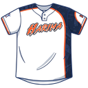

<!doctype html>
<html lang="ja">
<head>
<meta charset="utf-8">
<meta name="viewport" content="width=device-width,initial-scale=1,viewport-fit=cover">
<title>兵庫播磨速報</title>
<meta name="theme-color" content="#13284B">
<meta name="apple-mobile-web-app-capable" content="yes">
<meta name="mobile-web-app-capable" content="yes">
<meta name="apple-mobile-web-app-status-bar-style" content="black-translucent">
<meta name="apple-mobile-web-app-title" content="兵庫播磨速報">
<link rel="manifest" href="manifest.webmanifest">
<link rel="icon" href="icon-192.png?v=2">
<link rel="apple-touch-icon" href="apple-touch-icon.png?v=2">
<link rel="preconnect" href="https://fonts.googleapis.com">
<link rel="stylesheet" href="https://fonts.googleapis.com/css2?family=Barlow+Condensed:wght@500;600;700&family=Zen+Kaku+Gothic+New:wght@400;500;700&display=swap">
<style>
/* Layout: スコアボードを上部に固定し、その下にタブ（速報・経過・成績・試合・名簿）と記録係の入力パネルを縦に積む一列構成 */
:root{
  /* ネイビー中心・オレンジ差し色 */
  --bg:#EEF2F8; --surface:#FFFFFF; --ink:#0F1E38; --muted:#4E5D78; --line:#D2DAE7;
  --accent:#F0802E; --accent-ink:#0F1E38; --soft:#E3E9F3;
  --board:#13284B; --board-2:#1E3A66; --chalk:#FFFFFF; --chalk-dim:#B4C2DA; --hot:#FF9A4D;
  --note-bg:#FFF4EA; --note-line:#F3C9A3;
  --lamp-b:#2FD27A; --lamp-s:#F6C232; --lamp-o:#F0533F; --inplay:#3D86F0;
  --danger:#B8352A;
  --f-body:"Zen Kaku Gothic New","Hiragino Sans","Noto Sans JP",system-ui,sans-serif;
  --f-num:"Barlow Condensed","Arial Narrow",system-ui,sans-serif;
}
@media (prefers-color-scheme:dark){:root:not([data-theme="light"]){
  --bg:#0A1426; --surface:#12203A; --ink:#EAF0FA; --muted:#9AA9C3; --line:#253757;
  --accent:#FF8F45; --accent-ink:#14100A; --soft:#1A2B4A; --board:#0D1C36; --board-2:#18305A;
  --chalk:#FFFFFF; --chalk-dim:#A9B8D2; --hot:#FF9A4D; --note-bg:#2A2222; --note-line:#6B4A33;
  --danger:#FF7A6B; color-scheme:dark}}
:root[data-theme="dark"]{
  --bg:#0A1426; --surface:#12203A; --ink:#EAF0FA; --muted:#9AA9C3; --line:#253757;
  --accent:#FF8F45; --accent-ink:#14100A; --soft:#1A2B4A; --board:#0D1C36; --board-2:#18305A;
  --chalk:#FFFFFF; --chalk-dim:#A9B8D2; --hot:#FF9A4D; --note-bg:#2A2222; --note-line:#6B4A33;
  --danger:#FF7A6B; color-scheme:dark}
*{box-sizing:border-box}
[hidden]{display:none!important}
html{-webkit-text-size-adjust:100%}
img{max-width:100%}
body{margin:0;background:var(--bg);color:var(--ink);font-family:var(--f-body);font-size:15px;line-height:1.55;-webkit-tap-highlight-color:transparent}
button{font:inherit;color:inherit;cursor:pointer}
button:focus-visible,select:focus-visible,input:focus-visible,textarea:focus-visible{outline:2px solid var(--accent);outline-offset:2px}
.num{font-family:var(--f-num);font-variant-numeric:tabular-nums}
.wrap{max-width:760px;margin:0 auto;padding-left:max(16px,env(safe-area-inset-left,0px));padding-right:max(16px,env(safe-area-inset-right,0px))}

/* scoreboard */
.top{position:sticky;top:0;padding-top:env(safe-area-inset-top,0px);z-index:20;background:var(--board);color:var(--chalk);box-shadow:0 1px 0 rgba(0,0,0,.25)}
.top .wrap{padding-block:10px 0}
.gamehead{display:flex;align-items:center;gap:10px;justify-content:space-between}
.gamehead h1{margin:0;font-size:16px;font-weight:700;text-wrap:balance;min-width:0}
.gamehead .sub{font-size:12px;color:var(--chalk-dim)}
.status.done{border-color:var(--hot);color:var(--hot)}
.status{font-size:12px;padding:2px 10px;border-radius:99px;border:1px solid var(--chalk-dim);color:var(--chalk);white-space:nowrap}
.status.live{background:var(--lamp-o);border-color:var(--lamp-o);color:#fff}
.lsx{overflow-x:auto;margin-top:8px}
table.ls{border-collapse:separate;border-spacing:3px;width:100%;min-width:max-content}
table.ls th{font-weight:500;color:var(--chalk-dim);font-size:12px;text-align:center;padding:0 2px}
table.ls th.tn{text-align:left;min-width:64px}
table.ls td{background:var(--board-2);text-align:center;font-family:var(--f-num);font-size:21px;font-weight:600;min-width:26px;height:34px;padding:0 4px;border-radius:3px}
table.ls td.tn{background:none;text-align:left;font-family:var(--f-body);font-size:13px;font-weight:700;max-width:7.5em;overflow:hidden;text-overflow:ellipsis;white-space:nowrap}
table.ls td.cur{outline:2px solid var(--hot);outline-offset:-2px}
table.ls td.tot{color:var(--hot)}
table.ls td.sum{color:var(--chalk-dim);font-size:18px}
.tabs{display:flex;gap:2px;margin-top:8px;overflow-x:auto}
.tabs button{flex:1 0 auto;background:none;border:0;color:var(--chalk-dim);padding:10px 6px 9px;font-size:14px;font-weight:500;border-bottom:3px solid transparent;white-space:nowrap}
.tabs button[aria-selected="true"]{color:var(--chalk);border-bottom-color:var(--hot)}

main .wrap{padding-block:14px calc(60px + env(safe-area-inset-bottom,0px));display:flex;flex-direction:column;gap:14px}
.card{background:var(--surface);border:1px solid var(--line);border-radius:10px}
.pad{padding:14px}
h2{font-size:13px;letter-spacing:.06em;color:var(--muted);margin:0 0 8px;font-weight:700}
.muted{color:var(--muted)}
.small{font-size:12px}

/* live situation */
.sit{display:flex;justify-content:space-between;align-items:center;gap:12px;margin-bottom:10px}
.stack{display:flex;flex-direction:column;gap:12px}
.stack .sit{margin-bottom:0}
.bso1{display:flex;flex-direction:column;gap:6px;align-items:flex-end}
.bso1 .bl{display:flex;align-items:center;gap:5px}
.bso1 b{font-family:var(--f-num);font-size:18px;width:14px;text-align:center}
.stack .mu{margin-top:0}
.fieldwrap.ed .field{max-width:300px}
.chip.mini{padding:4px 10px;font-size:12px;min-width:0}
.f-pl.miss rect{fill:rgba(200,50,40,.9)}
.bso{display:grid;grid-template-columns:auto auto;gap:6px 8px;align-items:center}
.bso b{font-family:var(--f-num);font-size:18px;font-weight:700;width:14px}
.lamps{display:flex;gap:6px}
.lamp{width:20px;height:20px;border-radius:50%;background:var(--soft);border:1px solid var(--line)}
.lamp.b.on{background:var(--lamp-b);border-color:var(--lamp-b)}
.lamp.s.on{background:var(--lamp-s);border-color:var(--lamp-s)}
.lamp.o.on{background:var(--lamp-o);border-color:var(--lamp-o)}
.field{display:block;width:100%;max-width:420px;margin:0 auto;height:auto}
.f-track{fill:#b98c5e}.f-grass{fill:#3d8a4c}.f-dirt{fill:#c9a273}.f-line{stroke:#fff;stroke-width:1.4}.f-plate{fill:#fff}
.f-base{fill:#fff;stroke:#e9e2d4;stroke-width:1}.f-base.on{fill:var(--accent);stroke:#fff;stroke-width:2}
.f-rn{font-size:12px;font-weight:700;fill:#fff;paint-order:stroke;stroke:#13284B;stroke-width:3px;font-family:var(--f-body)}
.f-pl rect{fill:rgba(19,40,75,.9);stroke:#fff;stroke-width:1}
.f-pl text{font-size:11.5px;font-weight:700;fill:#fff;font-family:var(--f-body)}
.f-no{fill:#FF9A4D;font-family:var(--f-num);font-size:13px}
.f-dh{font-size:11px;font-weight:700;fill:var(--ink);font-family:var(--f-body)}
.f-ball{fill:none;stroke:#fff;stroke-width:2.6;stroke-linecap:round;filter:drop-shadow(0 0 1.5px rgba(0,0,0,.5))}
.f-ball.g{stroke-dasharray:4 4}
.f-land{fill:#fff;stroke:#13284B;stroke-width:1.5}.f-land.hit{fill:#FF9A4D}
@media (prefers-reduced-motion:no-preference){.f-ball.anim{stroke-dasharray:100;stroke-dashoffset:100;animation:fdraw .9s ease-out forwards}}
@keyframes fdraw{to{stroke-dashoffset:0}}
.field .tap{cursor:pointer}
.dia .base{fill:var(--soft);stroke:var(--muted);stroke-width:1.5}
.dia .base.on{fill:var(--accent);stroke:var(--accent)}
.dia .tap{cursor:pointer}
.dia text{fill:var(--ink);font-size:11px;font-family:var(--f-body);font-weight:700}
.dia .line{stroke:var(--line);stroke-width:2;fill:none}
.inn{font-family:var(--f-num);font-size:30px;font-weight:700;line-height:1}
.inn small{font-family:var(--f-body);font-size:14px;font-weight:700;margin-left:2px}
.mu{display:grid;grid-template-columns:1fr 1fr;gap:10px;margin-top:12px}
.mu > div{background:var(--soft);border-radius:8px;padding:10px 12px;min-width:0}
.mu .k{font-size:11px;color:var(--muted);letter-spacing:.05em}
.mu .v{font-weight:700;font-size:16px;overflow-wrap:anywhere}
.mu .d{font-size:12px;color:var(--muted)}
.np{font-family:var(--f-num);font-size:26px;font-weight:700;line-height:1}
.np span{font-family:var(--f-body);font-size:12px;font-weight:500;color:var(--muted);margin-left:3px}

/* plays */
.plays{list-style:none;margin:0;padding:0;display:flex;flex-direction:column}
.plays li{display:grid;grid-template-columns:auto 1fr;gap:4px 10px;padding:10px 0;border-top:1px solid var(--line)}
.plays li:first-child{border-top:0}
.plays .who{font-weight:700}
.plays .tag{font-size:11px;color:var(--muted);font-family:var(--f-num);min-width:34px}
.plays .txt{grid-column:2}
.plays .run{color:var(--danger);font-weight:700}
.seq{display:flex;flex-wrap:wrap;gap:3px;grid-column:2}
.pc{width:18px;height:18px;border-radius:50%;font-size:10px;display:grid;place-items:center;font-weight:700;color:#0b1a12}
.pc.B{background:var(--lamp-b)}.pc.S,.pc.W,.pc.F{background:var(--lamp-s)}.pc.X{background:var(--inplay);color:#fff}
.half{font-size:14px;font-weight:700;padding:10px 14px;background:var(--soft);border-radius:8px 8px 0 0}

/* input panel */
.panel{display:flex;flex-direction:column;gap:12px}
.cnt{display:grid;grid-template-columns:repeat(4,1fr);gap:8px}
.big{border:0;border-radius:10px;padding:16px 4px;font-size:16px;font-weight:700;min-height:58px}
.big.B{background:var(--lamp-b);color:#06210f}.big.S{background:var(--lamp-s);color:#2a1d00}.big.W{background:#13284B;color:#F6C232;box-shadow:inset 0 0 0 3px #F6C232}.big.F{background:var(--soft);border:1px solid var(--line)}
.dirs{display:flex;gap:5px;flex-wrap:wrap}
.chip{border:1px solid var(--line);background:var(--surface);border-radius:99px;padding:6px 11px;font-size:14px;font-weight:700;min-width:40px}
.chip[aria-pressed="true"]{background:var(--ink);color:var(--surface);border-color:var(--ink)}
.res{display:grid;grid-template-columns:repeat(4,1fr);gap:6px}
.rb{border:1px solid var(--line);background:var(--surface);border-radius:8px;padding:11px 2px;font-size:14px;font-weight:700;min-height:46px}
.res.hits{grid-template-columns:repeat(5,1fr)}
.res.hits .rb{font-size:13px;padding-inline:0}
.rb.hit{background:var(--accent);color:var(--accent-ink);border-color:var(--accent)}
.rb.on{background:var(--soft)}
.acts{display:grid;grid-template-columns:repeat(4,1fr);gap:6px}
.ab{border:1px solid var(--line);background:var(--soft);border-radius:8px;padding:10px 2px;font-size:13px;font-weight:700;min-height:46px}
.ab.danger{color:var(--danger)}
.lbl{font-size:11px;color:var(--muted);letter-spacing:.06em;font-weight:700;margin-bottom:-6px}

/* tables */
.tx{overflow-x:auto}
table.st{border-collapse:collapse;width:100%;min-width:max-content;font-size:14px}
table.st th{font-size:12px;color:var(--muted);font-weight:500;padding:6px 8px;border-bottom:1px solid var(--line);text-align:center;white-space:nowrap}
table.st td{padding:8px;border-bottom:1px solid var(--line);text-align:center;font-family:var(--f-num);font-size:17px;font-variant-numeric:tabular-nums}
table.st td.nm{text-align:left;font-family:var(--f-body);font-size:14px;font-weight:500;white-space:nowrap}
table.st td.ps{font-family:var(--f-body);font-size:13px;color:var(--muted);white-space:nowrap}
table.st tr.sub td.nm{padding-left:18px}

/* forms */
.form{display:flex;flex-direction:column;gap:12px}
.row{display:flex;gap:8px;flex-wrap:wrap;align-items:center}
.row > *{min-width:0}
label.f{display:flex;flex-direction:column;gap:4px;font-size:12px;color:var(--muted);font-weight:700;flex:1;min-width:120px}
input,select,textarea{font:inherit;font-size:16px;color:var(--ink);background:var(--surface);border:1px solid var(--line);border-radius:8px;padding:9px 10px;width:100%}
textarea{min-height:120px}
.btn{border:0;background:var(--accent);color:var(--accent-ink);border-radius:9px;padding:12px 16px;font-weight:700;font-size:15px}
.btn.ghost{background:var(--soft);color:var(--ink);border:1px solid var(--line)}
.btn.danger{background:var(--danger);color:#fff}
.lu{display:grid;grid-template-columns:28px 1fr 84px;gap:6px;align-items:center}
.lu .n{font-family:var(--f-num);font-size:18px;font-weight:700;text-align:center}
.roster{list-style:none;margin:0;padding:0}
.roster li{display:flex;align-items:center;gap:10px;padding:8px 0;border-top:1px solid var(--line)}
.roster li:first-child{border-top:0}
.roster .no{font-family:var(--f-num);font-size:20px;font-weight:700;width:36px;text-align:center}
.roster .nm{flex:1;min-width:0}
.x{border:0;background:none;color:var(--muted);font-size:13px;padding:6px}
.glist{list-style:none;margin:0;padding:0}
.glist li button{width:100%;text-align:left;background:none;border:0;border-top:1px solid var(--line);padding:12px 0;display:flex;gap:10px;align-items:center}
.glist li:first-child button{border-top:0}
.glist .sc{font-family:var(--f-num);font-size:22px;font-weight:700;margin-left:auto;white-space:nowrap}

.empty{padding:28px 18px;text-align:center}
.empty h3{margin:0 0 6px;font-size:17px}
.steps{text-align:left;max-width:420px;margin:14px auto 0;padding-left:1.4em;display:flex;flex-direction:column;gap:6px}

/* sheet */
.scrim{position:fixed;inset:0;background:rgba(0,0,0,.45);z-index:40;display:flex;align-items:flex-end;justify-content:center}
.sheet{background:var(--surface);width:100%;max-width:760px;max-height:82%;overflow:auto;border-radius:16px 16px 0 0;padding:16px max(16px,env(safe-area-inset-right,0px)) calc(20px + env(safe-area-inset-bottom,0px)) max(16px,env(safe-area-inset-left,0px));display:flex;flex-direction:column;gap:12px}
.sheet h3{margin:0;font-size:17px}
.pick{display:grid;grid-template-columns:repeat(auto-fill,minmax(130px,1fr));gap:8px}
.pick button{border:1px solid var(--line);background:var(--soft);border-radius:9px;padding:12px 10px;text-align:left;font-weight:700;display:flex;gap:8px;align-items:center;min-height:52px}
.pick button .no{font-family:var(--f-num);font-size:20px;min-width:24px}
.seg{display:flex;gap:4px;background:var(--soft);padding:4px;border-radius:10px}
.seg button{white-space:nowrap;flex:1;border:0;background:none;border-radius:7px;padding:9px 4px;font-weight:700;font-size:14px}
.seg button[aria-pressed="true"]{background:var(--surface);box-shadow:0 1px 2px rgba(0,0,0,.15)}

.toast button{margin-left:12px;border:0;background:var(--accent);color:var(--accent-ink);border-radius:99px;padding:4px 12px;font-weight:700;font-size:13px}
.fixable{cursor:pointer;border-radius:8px}
.fixable:active{background:var(--soft)}
.pen{margin-left:8px;font-size:11px;font-weight:700;color:var(--accent);border:1px solid var(--accent);border-radius:99px;padding:0 6px;vertical-align:1px}
button.pc{border:0;padding:0;cursor:pointer}
.toast{position:fixed;left:50%;transform:translateX(-50%);top:calc(12px + env(safe-area-inset-top,0px));background:var(--ink);color:var(--surface);padding:10px 16px;border-radius:99px;font-size:14px;z-index:60;max-width:calc(100% - 32px)}
.modebar{display:flex;align-items:center;justify-content:space-between;gap:10px}
.switch{display:flex;gap:8px;align-items:center;font-size:13px;font-weight:700}
.switch input{width:auto}
@media (prefers-reduced-motion:no-preference){.lamp,.base{transition:background .15s,fill .15s}}
.foot{display:flex;flex-direction:column;gap:10px;font-size:13px}
.foot details summary{cursor:pointer;font-weight:700}
.foot ol{margin:8px 0 0;padding-left:1.4em}
.sync.warn{color:var(--danger);font-weight:700}
.note{background:var(--note-bg);border:1px solid var(--note-line);border-radius:8px;padding:10px 12px;white-space:pre-wrap;overflow-wrap:anywhere}
.note .k{display:block;font-size:11px;font-weight:700;letter-spacing:.05em;color:var(--muted);margin-bottom:2px}
.noteedit{display:flex;flex-direction:column;gap:8px}
.noteedit textarea{min-height:72px}
.noteedit .row{justify-content:space-between}
mark{background:var(--note-line);color:var(--ink);border-radius:3px;padding:0 2px}
.srch{display:flex;gap:8px}
.srch input{flex:1;min-width:0}
.chips{display:flex;flex-wrap:wrap;gap:6px}
.links{display:flex;flex-direction:column;gap:8px}
.lk{display:flex;align-items:center;justify-content:space-between;gap:10px;padding:12px 14px;border:1px solid var(--line);border-radius:9px;background:var(--soft);color:var(--ink);text-decoration:none;font-weight:700}
.lk.pri{background:var(--accent);color:var(--accent-ink);border-color:var(--accent)}
.lk small{font-weight:500;color:inherit;opacity:.8}
.rule summary{cursor:pointer;list-style-position:outside}
.rule{border-top:1px solid var(--line);padding:12px 0;display:flex;flex-direction:column;gap:4px}
.rule:first-child{border-top:0;padding-top:0}
.rule h4{margin:0;font-size:15px}
.rule p{margin:0;white-space:pre-wrap;overflow-wrap:anywhere}
.addrow{display:grid;grid-template-columns:92px 92px 1fr;gap:8px;align-items:end}
.addrow .f{min-width:0}
.addrow .f small{display:block;font-weight:500;font-size:10px;letter-spacing:0;margin-top:-2px}
.addrow .n,.addrow .nm{color:var(--ink);font-size:15px}
.addrow .n input{text-align:center;font-family:var(--f-num);font-size:22px;font-weight:700;padding:8px 4px}
.uimg{width:30px;height:30px;object-fit:contain;flex:0 0 auto}
.ulab{display:inline-flex;align-items:center;gap:4px}
.roster li .uimg{width:26px;height:26px;margin-right:-6px}
.uni{display:inline-flex;flex-direction:column;align-items:center;min-width:40px;line-height:1.05}
.uni .ul{font-size:10px;color:var(--muted);font-weight:700;letter-spacing:.04em}
.uni b{font-family:var(--f-num);font-size:21px}
.uni.two b{color:var(--muted)}
.fseq{font-size:34px;font-weight:700;text-align:center;letter-spacing:.04em;padding:6px;background:var(--soft);border-radius:10px;min-height:56px;display:flex;align-items:center;justify-content:center;gap:2px}
.fseq span{color:var(--accent);margin:0 2px}
.fpad{display:grid;grid-template-columns:repeat(9,1fr);gap:4px}
.fpad button{border:1px solid var(--line);background:var(--surface);border-radius:8px;padding:6px 0;display:flex;flex-direction:column;align-items:center;line-height:1.1;min-height:48px}
.fpad b{font-family:var(--f-num);font-size:20px}
.fpad small{font-size:10px;color:var(--muted)}
.pstat{display:flex;flex-direction:column;gap:6px;background:var(--soft);border-radius:10px;padding:10px 12px}
.pstat>div:first-child{display:flex;justify-content:space-between;align-items:baseline;gap:8px}
.pstat .ps{display:flex;flex-wrap:wrap;gap:4px 14px;font-size:12px;color:var(--muted)}
.pstat .ps b{font-size:22px;color:var(--ink);margin-right:2px}
.dres{display:flex;flex-direction:column;gap:0;max-height:46vh;overflow:auto;border:1px solid var(--line);border-radius:10px;padding:0 10px}
.dterm{display:flex;gap:10px;align-items:center;padding:10px 0;border-top:1px solid var(--line)}
.dterm:first-child{border-top:0}
.dins{padding:8px 12px;font-size:13px;flex:0 0 auto}
.pkbox{display:flex;flex-direction:column;gap:6px;background:var(--soft);border-radius:10px;padding:10px}
.pkbox.auto{background:var(--note-bg)}
.pkh{display:flex;justify-content:space-between;align-items:center;font-size:12px;font-weight:700;color:var(--muted)}
.pkh .x{padding:0 4px;color:var(--accent);font-weight:700}
.pks{display:flex;flex-wrap:wrap;gap:6px}
.pk{display:inline-flex;align-items:center}
.pkx{border:0;background:var(--danger);color:#fff;border-radius:50%;width:20px;height:20px;font-size:12px;margin-left:-6px;padding:0}
.star{border:0;background:none;font-size:22px;color:var(--muted);padding:0 2px;flex:0 0 auto}
.star.on{color:#F0A020}
.clist{display:flex;flex-direction:column;gap:8px}
.crow{display:flex;gap:6px;justify-content:flex-end;margin-top:2px}
.crow .x{padding:2px 6px}
button{touch-action:manipulation;-webkit-user-select:none;user-select:none}
.big,.rb,.ab,.dg,.chip,.btn,.pc{transition:transform .06s,filter .06s}
.big:active,.rb:active,.ab:active,.dg:active,.chip:active,.btn:active{transform:scale(.95);filter:brightness(.9)}
.dgrid{display:grid;grid-template-columns:repeat(9,1fr);gap:4px}
.zgrid{display:grid;grid-template-columns:repeat(5,1fr);gap:4px}
.zgrid .z{font-size:13px}
.tgrid{display:grid;grid-template-columns:repeat(3,1fr);gap:4px}
.dg{border:1px solid var(--line);background:var(--surface);border-radius:8px;min-height:42px;font-weight:700;font-size:15px;padding:0}
.dg[aria-pressed="true"]{background:var(--ink);color:var(--surface);border-color:var(--ink)}
.selsum{display:inline-flex;align-items:center;gap:4px;background:var(--ink);color:var(--surface);border-radius:99px;padding:2px 4px 2px 10px;font-size:12px;letter-spacing:0}
.selsum .x{color:var(--surface);padding:0 6px}
.undo1{border:1px solid var(--line);background:var(--surface);border-radius:99px;padding:6px 12px;font-weight:700;font-size:13px;flex:0 0 auto}
.big{min-height:64px;font-size:16px;padding-inline:0;white-space:nowrap;letter-spacing:-.02em}
.share{display:flex;flex-direction:column;gap:8px;border-top:1px solid var(--line);padding-top:12px}
.btn.line{background:#06C755;color:#fff}
.shprev{margin:0;white-space:pre-wrap;font-family:var(--f-body);font-size:13px;background:var(--soft);border-radius:8px;padding:10px 12px;-webkit-user-select:text;user-select:text;overflow-wrap:anywhere}
.plines{list-style:none;margin:4px 0 0;padding:0;grid-column:2;display:flex;flex-direction:column;gap:3px}
.plines li{display:flex;align-items:center;gap:8px;padding:0;border:0;font-size:13px}
.plines .pc{flex:0 0 auto}
.pdesc{flex:1;min-width:0}
.pcnt{color:var(--muted);font-size:14px}
.atbat{background:var(--note-bg);border-radius:8px;padding:8px!important;margin-bottom:4px;border-top:0!important}
.nowpill{margin-left:8px;font-size:11px;font-weight:700;color:#fff;background:var(--lamp-o);border-radius:99px;padding:1px 8px;vertical-align:1px}
.abl>li.abx{display:block;padding:0;border-top:1px solid var(--line)}
.abl>li.abx:first-child{border-top:0}
.abx summary{list-style:none;display:flex;align-items:center;gap:10px;padding:10px 0;cursor:pointer}
.abx summary::-webkit-details-marker{display:none}
.abn{flex:0 0 22px;text-align:center;font-weight:700;color:var(--muted);font-size:16px}
.abh{flex:1;min-width:0;font-weight:700;font-size:14px}
.abh .muted{font-weight:500}
.abfix{color:var(--accent);font-weight:700;font-size:12px;padding:2px 6px;border:1px solid var(--accent)!important;border-radius:99px}
.chev{width:0;height:0;border-left:6px solid transparent;border-right:6px solid transparent;border-top:7px solid var(--ink);flex:0 0 auto}
details[open]>summary .chev{border-top:0;border-bottom:7px solid var(--ink)}
.abx details[open]+.collapsed-last{display:none}
.abx .plines{margin:0 0 10px 32px}
.abx .collapsed-last{margin-top:-4px}
.plines li.evl{font-size:13px;color:var(--ink);padding-left:2px;font-weight:500}
.abx.now{background:var(--note-bg);border-radius:10px;padding:8px 10px;margin-bottom:6px;border-top:0}
.abx.now .plines{margin-left:0}
.abhead{display:flex;align-items:center;gap:8px;margin-bottom:6px}
.abhead .nowpill{margin-left:0}
.tail .plines{margin:8px 0 8px 32px}
.plines .pdesc .pcnt{margin-left:4px}
</style>
<script src="https://www.gstatic.com/firebasejs/10.12.2/firebase-app-compat.js"></script>
<script src="https://www.gstatic.com/firebasejs/10.12.2/firebase-auth-compat.js"></script>
<script src="https://www.gstatic.com/firebasejs/10.12.2/firebase-firestore-compat.js"></script>
<script src="firebase-config.js"></script>
</head>
<body>

<div id="app"></div>
<div id="toast" class="toast" hidden></div>

<script>
const POS=['投','捕','一','二','三','遊','左','中','右','指'];
const FIELD={投:'ピッチャー',捕:'キャッチャー',一:'ファースト',二:'セカンド',三:'サード',遊:'ショート',左:'レフト',中:'センター',右:'ライト'};
const PN=p=>({投:'ピッチャー',指:'指名打者'})[p]||FIELD[p]||p;
const ZONE={三遊:'三遊間',二遊:'二遊間',左中:'左中間',右中:'右中間',返し:'センター返し'};
const BASEN=['一塁','二塁','三塁'];
const RES=[
 ['1B','安打','hit'],['IH','内野安打','hit'],['2B','二塁打','hit'],['3B','三塁打','hit'],['HR','本塁打','hit'],
 ['BB','四球'],['HBP','死球'],['K','三振'],['GO','ゴロ'],
 ['FO','フライ'],['LO','ライナー'],['DP','併殺'],['SAC','犠打'],
 ['SF','犠飛'],['E','失策'],['FC','野選']];
const HITS=['1B','IH','2B','3B','HR'];

let db=null,auth=null,me=null,role='viewer',noDb=false,booted=false;
let pendingWrites=false,offline=false,roles=[],unsubRoles=null;
let team={name:'',players:[],rules:[]};
let ruleQ='';let ruleEdit=null;let playerEdit=null;
const UNI={1:'ファースト',2:'セカンド'};
function gdate(g){if(!g||!g.date)return '';const [y,m,d]=g.date.split('-').map(Number);const w='日月火水木金土'[new Date(y,m-1,d).getDay()];return `${m}月${d}日(${w})${g.time?' '+g.time+' 開始':''}`}
function numFor(p,g){return g&&g.uniform==='2'?(p.num2||p.num||''):(p.num||'')}
let games={};let currentId=null;let viewId=null;
let tab='live';let sheet=null;let dirSel=null;
let scorer=lsGet('scorer','1')==='1';
let loaded={team:false,games:false};

function lsGet(k,d){try{const v=localStorage.getItem(k);return v==null?d:v}catch(e){return d}}
function lsSet(k,v){try{localStorage.setItem(k,v)}catch(e){}}
function esc(s){return String(s??'').replace(/[&<>"']/g,c=>({'&':'&amp;','<':'&lt;','>':'&gt;','"':'&quot;',"'":'&#39;'}[c]))}
function uid(){return (crypto.randomUUID?crypto.randomUUID():Date.now().toString(36)+Math.random().toString(36).slice(2)).replace(/[^A-Za-z0-9_-]/g,'')}
let toastT,undoFn=null;function toast(m){const t=document.getElementById('toast');t.textContent=m;t.hidden=false;clearTimeout(toastT);toastT=setTimeout(()=>t.hidden=true,2200)}
function toastUndo(m,fn){undoFn=fn;const t=document.getElementById('toast');t.innerHTML=`${esc(m)}<button data-act="toastundo">元に戻す</button>`;t.hidden=false;clearTimeout(toastT);toastT=setTimeout(()=>{t.hidden=true;undoFn=null},6000)}
function toTop(){const c=document.getElementById('livecard');if(!c)return;const h=document.querySelector('.top')?.offsetHeight||0;const y=c.getBoundingClientRect().top+window.scrollY-h-8;window.scrollTo({top:y,behavior:matchMedia('(prefers-reduced-motion: reduce)').matches?'auto':'smooth'})}
function fixEdit(fn,msg){const gm=cur();const ev=gm.events[sheet.ei];if(!ev)return;const before=JSON.stringify(ev);fn(ev);gm.updatedAt=Date.now();saveGame(gm.id);const ei=sheet.ei;sheet=null;render();
  const gid=gm.id;toastUndo(msg,()=>{const g2=games[gid];if(!g2)return;g2.events[ei]=JSON.parse(before);g2.updatedAt=Date.now();saveGame(gid);render()})}

/* ---------- game engine: state is rebuilt by replaying events ---------- */
function replay(g){
  const usHalf=g.weTop?0:1;
  const S={inning:1,half:0,outs:0,b:0,s:0,bases:[null,null,null],score:[[0],[]],hits:[0,0],
    order:[0,0],lineup:g.lineup.map(x=>({...x})),hist:g.lineup.map(x=>[{pid:x.pid,trail:[x.pos],kind:'先発'}]),
    usP:g.startPitcher,oppP:g.oppPitcher||'先発投手',bat:{},pit:{},pitOrder:[],log:[],seq:[],
    ended:false,walkoff:false,lastEligible:false,lastBatter:null,since:0,usHalf};
  const pname=pid=>{const p=g.players[pid];return p?p.name:'?'};
  const bat=pid=>S.bat[pid]||(S.bat[pid]={PA:0,AB:0,H:0,D:0,T:0,HR:0,RBI:0,R:0,BB:0,HBP:0,K:0,SB:0,SAC:0});
  const pit=key=>{if(!S.pit[key]){S.pit[key]={np:0,outs:0,H:0,K:0,BB:0,HBP:0,R:0,bf:0};S.pitOrder.push(key)}return S.pit[key]};
  if(S.usP)pit('u:'+S.usP);pit('o:'+S.oppP);
  const pitKey=()=>S.half===usHalf?'o:'+S.oppP:'u:'+S.usP;
  const tot=h=>S.score[h].reduce((a,b)=>a+(b||0),0);
  const batter=()=>{const slot=S.order[S.half]%9;return S.half===usHalf?{us:true,pid:S.lineup[slot].pid,slot}:{us:false,slot}};
  const rname=r=>r.us?pname(r.pid):`相手${r.slot+1}番`;
  S.ab={pre:null,items:[]};
  const sit=()=>({outs:S.outs,bases:S.bases.map(x=>!!x)});
  const abStart=()=>{if(!S.ab.pre)S.ab.pre=sit()};
  const log=(o)=>{S.log.push({inning:S.inning,half:S.half,ei:S.ei,...o});if(o.kind!=='pa'){abStart();S.ab.items.push({ev:o.text,runs:o.runs||0,score:o.score,ei:S.ei})}};
  const flushTail=()=>{if(S.ab.items.length){S.log.push({kind:'tail',inning:S.inning,half:S.half,ei:S.ei,ab:{pre:S.ab.pre,items:S.ab.items}})}S.ab={pre:null,items:[]}};
  function endHalf(){
    if(S.ended)return;
    flushTail();
    S.outs=0;S.b=0;S.s=0;S.bases=[null,null,null];S.seq=[];S.seqIdx=[];S.seqCnt=[];S.since=0;S.lastBatter=null;
    if(S.half===0){
      if(S.inning>=g.innings&&tot(1)>tot(0)){S.ended=true;return}
      S.half=1;if(S.score[1][S.inning-1]==null)S.score[1][S.inning-1]=0;
    }else{
      if(S.inning>=g.innings&&tot(0)!==tot(1)){S.ended=true;return}
      S.inning++;S.half=0;if(S.score[0][S.inning-1]==null)S.score[0][S.inning-1]=0;
    }
  }
  function addOut(n){if(!n)return;pit(pitKey()).outs+=n;S.outs+=n;if(S.outs>=3)endHalf()}
  function scoreRun(r,rbiPid){
    S.score[S.half][S.inning-1]=(S.score[S.half][S.inning-1]||0)+1;
    if(r.us)bat(r.pid).R++;
    pit(pitKey()).R++;
    if(rbiPid)bat(rbiPid).RBI++;
    if(S.half===1&&S.inning>=g.innings&&tot(1)>tot(0)){S.ended=true;S.walkoff=true}
  }
  function pa(code,dir,auto,ex){
    const B=batter(),P=pit(pitKey());
    if(!auto){P.np++;S.seq.push('X');S.seqIdx.push(S.ei);S.seqCnt.push('')}
    P.bf++;
    const br=B.us?{us:true,pid:B.pid}:{us:false,slot:B.slot};
    const b=S.bases;let nb=[null,null,null],runs=[],outs=0;
    const advAll=n=>{for(let i=2;i>=0;i--)if(b[i]){const t=i+n;if(t>=3)runs.push(b[i]);else nb[t]=b[i]}};
    const force=()=>{nb=b.slice();if(nb[0]){if(nb[1]){if(nb[2])runs.push(nb[2]);nb[2]=nb[1]}nb[1]=nb[0]}nb[0]=br};
    switch(code){
      case'1B':case'IH':advAll(1);nb[0]=br;break;
      case'2B':advAll(2);nb[1]=br;break;
      case'3B':advAll(3);nb[2]=br;break;
      case'HR':advAll(3);runs.push(br);break;
      case'BB':case'HBP':case'E':force();break;
      case'K':case'GO':case'FO':case'LO':nb=b.slice();outs=1;break;
      case'SAC':advAll(1);outs=1;break;
      case'SF':nb=b.slice();if(nb[2]){runs.push(nb[2]);nb[2]=null}outs=1;break;
      case'FC':nb=b.slice();if(b[0]){const k=b[1]?(b[2]?2:1):0;for(let j=k;j>0;j--)nb[j]=b[j-1];outs=1}nb[0]=br;break;
      case'DP':nb=b.slice();
        if(ex&&ex.o&&ex.o.length){let o=0;ex.o.forEach(x=>{if(x==='b')o++;else if(nb[x]){nb[x]=null;o++}});if(!ex.o.includes('b')&&!nb[0])nb[0]=br;outs=o}
        else{if(nb[0])nb[0]=null;else{for(let i=2;i>=0;i--)if(nb[i]){nb[i]=null;break}}outs=2}break;
    }
    if(S.outs+outs>=3)runs=[];
    if(B.us){const st=bat(B.pid);st.PA++;
      if(!['BB','HBP','SAC','SF'].includes(code))st.AB++;
      if(HITS.includes(code)){st.H++;if(code==='2B')st.D++;if(code==='3B')st.T++;if(code==='HR')st.HR++}
      if(code==='K')st.K++;if(code==='BB')st.BB++;if(code==='HBP')st.HBP++;if(code==='SAC'||code==='SF')st.SAC++;}
    if(HITS.includes(code)){S.hits[S.half]++;P.H++}
    if(code==='K')P.K++;if(code==='BB')P.BB++;if(code==='HBP')P.HBP++;
    const eligible=!['E','DP'].includes(code);
    const kind=code==='K'?(S.seq[S.seq.length-1]==='S'?'見逃し三振':S.seq[S.seq.length-1]==='W'?'空振り三振':'三振'):null;
    const entry={kind:'pa',who:rname(br),slot:B.slot,us:B.us,code,dir:dir||null,tt:ex&&ex.tt||null,text:(t=>outs>=3&&code==='DP'?t.replace('併殺','三重殺').replace('ダブルプレー','トリプルプレー'):t)(resText(code,dir,kind))+(ex&&ex.f?`（${ex.f}）`:''),seq:S.seq.slice(),seqIdx:S.seqIdx.slice(),seqCnt:S.seqCnt.slice(),auto:!!auto,runs:runs.length,outsAfter:Math.min(3,S.outs+outs)};
    S.bases=S.outs+outs>=3?[null,null,null]:nb;
    runs.forEach(r=>scoreRun(r,eligible&&B.us?B.pid:null));
    entry.score=[tot(0),tot(1)];
    entry.ab={pre:S.ab.pre||sit(),items:S.ab.items.concat(auto?[]:[{p:'X',ei:S.ei}])};S.ab={pre:null,items:[]};
    log(entry);
    S.order[S.half]++;S.b=0;S.s=0;S.seq=[];S.seqIdx=[];S.seqCnt=[];S.since=0;
    S.lastEligible=eligible;S.lastBatter=B.us?B.pid:null;
    addOut(outs);
  }
  function moveUp(i,rbi){const r=S.bases[i];if(!r)return;if(i===2){S.bases[2]=null;scoreRun(r,rbi)}else{if(S.bases[i+1])moveUp(i+1,rbi);S.bases[i+1]=r;S.bases[i]=null}}
  S.seqIdx=[];S.seqCnt=[];const EV=g.events||[];
  for(let ei=0;ei<EV.length;ei++){const e=EV[ei];S.ei=ei;if(!S.ended&&e.t!=='end')abStart();
    if(S.ended&&e.t!=='undo')break;
    if(e.t==='p'){
      const P=pit(pitKey());P.np++;S.since++;S.seq.push(e.k);S.seqIdx.push(ei);
      const pushP=()=>{S.seqCnt.push(`${S.b}-${S.s}`);S.ab.items.push({p:e.k,cnt:`${S.b}-${S.s}`,ei})};
      if(e.k==='B'){S.b++;pushP();if(S.b>=4)pa('BB',null,true)}
      else if(e.k==='S'||e.k==='W'){S.s++;pushP();if(S.s>=3)pa('K',null,true)}
      else if(e.k==='F'){if(S.s<2)S.s++;pushP()}
    }else if(e.t==='pa'){pa(e.c,e.d,false,e)}
    else if(e.t==='run'){
      const r=S.bases[e.base];if(!r)continue;
      const rbi=(e.why==='adv'&&S.since===0&&S.lastEligible&&S.lastBatter)?S.lastBatter:null;
      const before=[tot(0),tot(1)];
      let text='';
      const fx=e.f?`（${e.f}）`:'';const btw=['一二塁間','二三塁間','三本間'][e.base];
      if(e.to==='out'){S.bases[e.base]=null;text=e.why==='RD'?`${btw}の挟殺プレー${fx}で${BASEN[e.base]}走者 ${rname(r)} タッチアウト`:`${BASEN[e.base]}走者 ${rname(r)} ${e.why==='PO'?'牽制死':e.why==='CS'?'盗塁死':'走塁死'}${fx}`;log({kind:'run',text,runs:0,score:before});addOut(1);continue}
      if(e.why==='SB'&&r.us)bat(r.pid).SB++;
      const tgt=e.to==='home'?3:e.to==='next'?e.base+1:+e.to;
      if(tgt>=3){S.bases[e.base]=null;scoreRun(r,rbi)}
      else if(tgt>e.base){for(let k=e.base;k<tgt;k++)moveUp(k,rbi)}
      else if(tgt<e.base){if(S.bases[tgt])continue;S.bases[tgt]=r;S.bases[e.base]=null}
      else{if(e.why==='RD')log({kind:'run',text:`${btw}の挟殺プレー${fx}、${BASEN[e.base]}走者 ${rname(r)} は${BASEN[e.base]}に戻ってセーフ`,runs:0,score:before});continue}
      const why={SB:'盗塁',WP:'暴投・捕逸',E:'エラー',adv:'進塁',RD:'挟殺プレーの間に'}[e.why]||'進塁';
      const scored=tot(0)+tot(1)-before[0]-before[1];
      const where=tgt>=3?'生還':tgt<e.base?`${BASEN[tgt]}へ戻る`:`${BASEN[tgt]}へ`;
      text=e.why==='RD'?`${btw}の挟殺プレー${fx}、${BASEN[e.base]}走者 ${rname(r)} ${where==='生還'?'生還':where}（セーフ）`:`${BASEN[e.base]}走者 ${rname(r)} ${e.why==='adv'||tgt<e.base?'':why+'で'}${where}`;
      log({kind:'run',text,runs:scored,score:[tot(0),tot(1)]});
    }
    else if(e.t==='sub'){
      const old=S.lineup[e.slot].pid;const runBase=S.bases.findIndex(r=>r&&r.us&&r.pid===old);
      const oldPos=S.lineup[e.slot].pos;const np=e.pos||oldPos;let swapTx='';
      if(np!==oldPos){const j=S.lineup.findIndex((x,i)=>i!==e.slot&&x.pos===np);if(j>=0&&oldPos!=='投'&&oldPos!=='指'){S.lineup[j].pos=oldPos;S.hist[j][S.hist[j].length-1].trail.push(oldPos);swapTx=`、${pname(S.lineup[j].pid)}が${PN(oldPos)}へ`}}
      S.lineup[e.slot]={pid:e.pid,pos:np};
      const lab={代打:'打',代走:'走'}[e.kind]||e.pos;
      S.hist[e.slot].push({pid:e.pid,trail:[lab],kind:e.kind});
      if(e.kind==='代走')S.bases=S.bases.map(r=>r&&r.us&&r.pid===old?{us:true,pid:e.pid}:r);
      log({kind:'sub',text:e.kind==='代打'?`代打　${pname(old)}がベンチに下がり、${pname(e.pid)}が打席へ`:e.kind==='代走'?`代走　${pname(old)}がベンチに下がり、${pname(e.pid)}が${runBase>=0?BASEN[runBase]+'ランナーに':'ランナーに'}`:`守備交代　${pname(old)}がベンチに下がり、${pname(e.pid)}が${PN(np)}の守備へ${swapTx}`,score:[tot(0),tot(1)]});
    }
    else if(e.t==='pos'){
      const L=S.lineup[e.slot];const prev=L.pos;if(prev===e.pos)continue;
      const j=S.lineup.findIndex((x,i)=>i!==e.slot&&x.pos===e.pos);
      L.pos=e.pos;const h=S.hist[e.slot];h[h.length-1].trail.push(e.pos);
      let tx=`守備位置変更　${pname(L.pid)}が${PN(e.pos)}へ`;
      if(j>=0&&prev!=='投'&&prev!=='指'){S.lineup[j].pos=prev;S.hist[j][S.hist[j].length-1].trail.push(prev);tx+=`、${pname(S.lineup[j].pid)}が${PN(prev)}へ`}
      log({kind:'sub',text:tx,score:[tot(0),tot(1)]});
    }
    else if(e.t==='pitcher'){
      if(e.side==='us'){
        const old=S.usP;S.usP=e.pid;pit('u:'+e.pid);
        const at=S.lineup.findIndex(x=>x.pid===e.pid);
        let text=`投手交代　${pname(old)}がマウンドを下り、${pname(e.pid)}がマウンドへ`;
        if(at>=0){const from=S.lineup[at].pos;if(from!=='投'){
            const ps=S.lineup.findIndex((x,i)=>i!==at&&x.pos==='投');
            S.lineup[at].pos='投';S.hist[at][S.hist[at].length-1].trail.push('投');
            if(ps>=0){
              if(e.rep){const oldP=S.lineup[ps].pid;S.lineup[ps]={pid:e.rep,pos:from};S.hist[ps].push({pid:e.rep,trail:[from],kind:'守備'});text=`投手交代　${PN(from)}の${pname(e.pid)}がマウンドへ！${pname(old)}はマウンドを下り、${PN(from)}には${pname(e.rep)}`}
              else{S.lineup[ps].pos=from;S.hist[ps][S.hist[ps].length-1].trail.push(from);text=`投手交代　${PN(from)}の${pname(e.pid)}がマウンドへ！${pname(old)}はマウンドを下り${PN(from)}の守備へ`}}}}
        else{const ps=S.lineup.findIndex(x=>x.pos==='投');if(ps>=0){S.lineup[ps]={pid:e.pid,pos:'投'};S.hist[ps].push({pid:e.pid,trail:['投'],kind:'守備'})}}
        log({kind:'sub',text,score:[tot(0),tot(1)]});
      }else{
        const old=S.oppP;S.oppP=e.name;pit('o:'+e.name);
        log({kind:'sub',text:`相手投手交代　${old}がマウンドを下り、${e.name}がマウンドへ`,score:[tot(0),tot(1)]});
      }
    }
    else if(e.t==='end'){S.ended=true}
  }
  S.cur=S.ended?null:S.ab;
  S.tot=[tot(0),tot(1)];S.pitKey=pitKey();S.batter=S.ended?null:batter();S.pname=pname;S.rname=rname;
  return S;
}
function resText(code,dir,kind){
  const z=dir&&ZONE[dir];const f=dir?(FIELD[dir]||ZONE[dir]||''):'';
  const to=dir==='返し'?'の':'への';
  switch(code){
    case'1B':return f?`${f}${to}ヒット`:'ヒット';
    case'IH':return f?(z?`${f}${to}内野安打`:`${f}への内野安打`):'内野安打';
    case'2B':return f?`${f}${to}ツーベース`:'ツーベースヒット';
    case'3B':return f?`${f}${to}スリーベース`:'スリーベースヒット';
    case'HR':return f?`${f}${to}ホームラン`:'ホームラン';
    case'BB':return'フォアボール';case'HBP':return'デッドボール';
    case'K':return kind||'三振';
    case'GO':return f?(z?`${f}${to}ゴロ`:`${f}ゴロ`):'ゴロ';
    case'FO':return f?(z?`${f}${to}フライ`:`${f}フライ`):'フライ';
    case'LO':return f?(z?`${f}${to}ライナー`:`${f}ライナー`):'ライナー';
    case'DP':return f?(z?`${f}${to}ゴロで併殺`:`${f}ゴロ併殺`):'ダブルプレー';
    case'SAC':return f?`送りバント（${f}）`:'送りバント';
    case'SF':return f?`${f}${to}犠牲フライ`:'犠牲フライ';
    case'E':return f?(z?`エラーで出塁（${f}）`:`${f}のエラーで出塁`):'エラーで出塁';
    case'FC':return f?`フィールダースチョイス（${f}）`:'フィールダースチョイス';
  }return code;
}

/* ---------- data ---------- */
function cur(){return viewId&&games[viewId]?games[viewId]:null}
function teamNames(g){return g.weTop?[g.usName,g.opponent]:[g.opponent,g.usName]}
function writeErr(e){
  if(e&&e.code==='permission-denied')toast('記録する権限がありません。管理者に許可を依頼してください');
  else toast('保存できませんでした。通信状況を確認してください');
}
function saveGame(id){db.doc('games/'+id).set(JSON.parse(JSON.stringify(games[id]))).catch(writeErr)}
function saveTeam(){db.doc('team/main').set(JSON.parse(JSON.stringify(team))).catch(writeErr)}
function setCurrent(id){currentId=id;db.doc('meta/current').set({gameId:id}).catch(()=>{})}
function push(ev){const g=cur();if(!g)return;g.events=g.events||[];g.events.push(ev);g.updatedAt=Date.now();saveGame(g.id);render()}
function undo(){const g=cur();if(!g||!g.events||!g.events.length){toast('取り消す記録がありません');return}g.events.pop();g.updatedAt=Date.now();saveGame(g.id);toast('ひとつ前の記録を取り消しました');render()}

/* ---------- render ---------- */
const isScorer=()=>role==='scorer'||role==='owner';
const isOwner=()=>role==='owner';
const editing=()=>isScorer()&&scorer;
function render(){
  const app=document.getElementById('app');
  const keep=[...document.querySelectorAll('input[id],textarea[id],select[id]')].reduce((o,el)=>(o[el.id]=el.value,o),{});
  const g=cur();const S=g?replay(g):null;
  app.innerHTML=renderTop(g,S)+`<main><div class="wrap">${renderBody(g,S)}</div></main>`+(sheet?renderSheet(g,S):'');
  for(const id in keep){const el=document.getElementById(id);if(!el||el.dataset.keep==='no')continue;if(el.value!==keep[id]&&(el.dataset.draft==='1'||el.tagName==='SELECT'||el.type==='date'||el.type==='time'||(el.value===''&&keep[id])))el.value=keep[id]}
  dhToggle();uniLabels();
}
function renderTop(g,S){
  let head='',ls='';
  if(g){
    const [t,b]=teamNames(g);const n=Math.max(g.innings,S.score[0].length);
    const st=!g.events||!g.events.length?'試合前':S.ended?'試合終了':'試合中';
    head=`<div class="gamehead"><div style="min-width:0"><h1>${esc(g.usName)} vs ${esc(g.opponent)}</h1><div class="sub">${esc(gdate(g))}${g.venue?' ・ '+esc(g.venue):''}</div></div><span class="status ${st==='試合中'?'live':st==='試合終了'?'done':''}">${st}</span></div>`;
    let hd='<tr><th class="tn"></th>';for(let i=1;i<=n;i++)hd+=`<th>${i}</th>`;hd+='<th>計</th><th>安</th></tr>';
    const rows=[0,1].map(h=>{let r=`<tr><td class="tn">${esc([t,b][h])}</td>`;
      for(let i=0;i<n;i++){let v=S.score[h][i];let txt=v==null?'':v;
        if(h===1&&S.ended&&v==null&&i===S.score[0].length-1&&S.tot[1]>S.tot[0])txt='X';
        if(h===1&&S.walkoff&&i===S.inning-1)txt=v+'X';
        const isCur=!S.ended&&g.events&&g.events.length&&S.inning-1===i&&S.half===h;
        r+=`<td class="${isCur?'cur':''}">${txt}</td>`}
      return r+`<td class="tot">${S.tot[h]}</td><td class="sum">${S.hits[h]}</td></tr>`}).join('');
    ls=`<div class="lsx"><table class="ls num"><thead>${hd}</thead><tbody>${rows}</tbody></table></div>`;
  }else{
    head=`<div class="gamehead"><div><h1>${esc(team.name||'チーム速報')}</h1><div class="sub">試合速報</div></div></div>`;
  }
  const tabs=[['live','速報'],['log','経過'],['stats','成績'],['games','試合'],['roster','名簿'],['rules','ルール']].concat(isOwner()?[['admin','管理']]:[]);
  return `<header class="top"><div class="wrap">${head}${ls}<nav class="tabs" role="tablist">${tabs.map(([k,l])=>`<button role="tab" aria-selected="${tab===k}" data-act="tab" data-v="${k}">${l}</button>`).join('')}</nav></div></header>`;
}
function renderBody(g,S){
  if(noDb)return `<div class="card empty"><h3>初期設定がまだです</h3><p class="muted">firebase-config.js に Firebase の設定を書き込むと、速報が使えるようになります。</p></div>`;
  if(!booted)return `<div class="card empty"><p class="muted">試合データを読み込んでいます…</p></div>`;
  let modebar='';
  const posBtn=tab==='live'&&g&&!S?.ended?`<button class="chip mini" aria-pressed="${fieldMode==='pos'}" data-act="fmode" data-v="${fieldMode==='pos'?'runner':'pos'}">守備位置</button>`:'';
  if(isScorer())modebar=`<div class="modebar"><span class="small muted">${scorer?'記録係モード':'閲覧モード'}　${syncLabel()}</span><div class="row" style="gap:10px;flex-wrap:nowrap">${posBtn}<label class="switch"><input type="checkbox" id="scorerSw" data-act="scorer" ${scorer?'checked':''}> 記録する</label></div></div>`;
  else if(posBtn)modebar=`<div class="modebar"><span></span>${posBtn}</div>`;
  let main;
  if(tab==='admin'&&isOwner())main=renderAdmin();
  else if(tab==='rules')main=renderRules();
  else if(tab==='roster')main=renderRoster();
  else if(tab==='games')main=renderGames();
  else if(!g)main=noGame();
  else if(tab==='log')main=renderLog(g,S);
  else if(tab==='stats')main=renderStats(g,S);
  else main=renderLive(g,S);
  return modebar+main+renderFoot();
}
function noGame(){
  if(editing()){
    return `<div class="card empty"><h3>試合の準備をしましょう</h3><p class="muted">記録係が試合を作ると、チームのみんなの画面にすぐ速報が出ます。</p>
    <ol class="steps"><li>「名簿」で選手の背番号と名前を登録（管理者）</li><li>「試合」で相手・日付・スタメンを入力</li><li>「速報」でカウントと打席結果をタップ</li></ol>
    <div class="row" style="justify-content:center;margin-top:16px"><button class="btn" data-act="tab" data-v="${team.players.length?'games':'roster'}">${team.players.length?'試合を作る':'名簿を登録する'}</button></div></div>`;
  }
  return `<div class="card empty"><h3>まだ試合が始まっていません</h3><p class="muted">記録係が試合を作ると、ここにスコアとカウントが自動で表示されます。この画面を開いたままにしておけば、ほぼリアルタイムで更新されます。</p></div>`;
}
let fieldMode='runner';let ttSel=null;let lastAnim='';
const HX=150,HY=226;
const fpt=(deg,r)=>[HX+r*Math.sin(deg*Math.PI/180),HY-r*Math.cos(deg*Math.PI/180)];
const DIRA={三:[-36,72],遊:[-15,98],二:[15,98],一:[36,72],投:[0,46],捕:[0,14],左:[-30,150],中:[0,162],右:[30,150],三遊:[-25,92],二遊:[0,96],左中:[-15,165],右中:[15,165],返し:[0,64]};
const INF=['投','捕','一','二','三','遊','三遊','二遊','返し'];
function ballPath(code,dir,tt){
  if(!dir||!DIRA[dir])return null;
  let [deg,r]=DIRA[dir];const inf=INF.includes(dir);
  if(code==='HR')r=212;
  else if(code==='3B')r=Math.max(r,inf?168:174);
  else if(code==='2B')r=inf?160:Math.max(r,168);
  else if(code==='IH')r=inf?r:Math.min(r,100);
  else if(code==='1B')r=inf?(dir==='投'||dir==='捕'?r:128):Math.min(r,122);
  else if((code==='FO'||code==='SF')&&inf)r=Math.max(r,dir==='捕'?30:r);
  const type=tt||({IH:'G',GO:'G',DP:'G',FC:'G',SAC:'G',E:'G',LO:'L',FO:'F',SF:'F',HR:'F',1:'G'})[code]||(code==='1B'?(inf?'G':'L'):'L');
  const [x,y]=fpt(deg,r);const sx=HX,sy=HY-4;
  let d;
  if(type==='F'){const mx=(sx+x)/2,my=(sy+y)/2,len=Math.hypot(x-sx,y-sy);const nx=-(y-sy)/len,ny=(x-sx)/len;const k=len*0.42*(deg>0?-1:1)*(deg===0?-1:1);
    d=`M${sx} ${sy} Q${(mx+nx*k).toFixed(1)} ${(my+ny*k).toFixed(1)} ${x.toFixed(1)} ${y.toFixed(1)}`}
  else d=`M${sx} ${sy} L${x.toFixed(1)} ${y.toFixed(1)}`;
  return {d,x,y,type};
}
function surname(n){return String(n||'').trim().split(/[\s　]+/)[0]}
const POSXY={投:[150,192],捕:[150,244],一:[210,172],二:[196,134],遊:[104,134],三:[90,172],左:[70,84],中:[150,60],右:[230,84]};
function fieldSvg(g,S,tap){
  const R=186,[lx,ly]=fpt(-45,R),[rx,ry]=fpt(45,R),[lx2,ly2]=fpt(-45,R-10),[rx2,ry2]=fpt(45,R-10);
  const B=[fpt(45,64),fpt(0,90.5),fpt(-45,64)];
  let ground=`<path class="f-track" d="M${HX} ${HY} L${lx} ${ly} A${R} ${R} 0 0 1 ${rx} ${ry} Z"/>
    <path class="f-grass" d="M${HX} ${HY} L${lx2} ${ly2} A${R-10} ${R-10} 0 0 1 ${rx2} ${ry2} Z"/>
    <path class="f-dirt" d="M${HX} ${HY} L${fpt(-45,98).join(' ')} A96 96 0 0 1 ${fpt(45,98).join(' ')} Z"/>
    <path class="f-grass" d="M${HX} ${HY-12} L${(B[0][0]-9).toFixed(1)} ${B[0][1]} L${HX} ${(B[1][1]+11).toFixed(1)} L${(B[2][0]+9).toFixed(1)} ${B[2][1]} Z"/>
    <circle class="f-dirt" cx="${HX}" cy="${HY}" r="13"/><circle class="f-dirt" cx="150" cy="186" r="8"/>
    <line class="f-line" x1="${HX}" y1="${HY}" x2="${lx}" y2="${ly}"/><line class="f-line" x1="${HX}" y1="${HY}" x2="${rx}" y2="${ry}"/>
    <path class="f-plate" d="M${HX-4} ${HY-3} h8 v3 l-4 4 l-4 -4 Z"/>`;
  let over='';
  if(fieldMode==='pos'){
    const usLine=S.lineup;const pl=g.players||{};
    const lab=(pid)=>{const p=pl[pid]||{};return {n:p.num||'',s:surname(p.name||S.pname(pid))}};
    const items=[];usLine.forEach(x=>{if(POSXY[x.pos]&&x.pos!=='投')items.push([x.pos,x.pid])});
    if(S.usP)items.push(['投',S.usP]);
    const miss=['捕','一','二','三','遊','左','中','右'].filter(p=>!usLine.some(x=>x.pos===p));
    over=items.map(([pos,pid])=>{const [x,y]=POSXY[pos];const L=lab(pid);const w=Math.max(46,L.s.length*12+(L.n?String(L.n).length*7+12:0));
      return `<g class="f-pl"><rect x="${x-w/2}" y="${y-11}" width="${w}" height="22" rx="11"/><text x="${x}" y="${y+4.5}" text-anchor="middle">${L.n?`<tspan class="f-no">${esc(L.n)}</tspan> `:''}${esc(L.s)}</text></g>`}).join('');
    over+=miss.map(p=>{const [x,y]=POSXY[p];return `<g class="f-pl miss"><rect x="${x-26}" y="${y-11}" width="52" height="22" rx="11"/><text x="${x}" y="${y+4.5}" text-anchor="middle">${p} ?</text></g>`}).join('');
    const dh=usLine.find(x=>x.pos==='指');
    if(dh){const L=lab(dh.pid);over+=`<text class="f-dh" x="6" y="250">指名打者 ${L.n?'#'+esc(L.n)+' ':''}${esc(L.s)}</text>`}
    ground+=[0,1,2].map(i=>`<rect class="f-base" x="${B[i][0]-4}" y="${B[i][1]-4}" width="8" height="8" transform="rotate(45 ${B[i][0]} ${B[i][1]})"/>`).join('');
  }else{
    // last batted ball
    const last=[...S.log].reverse().find(l=>l.kind==='pa');
    if(last&&last.dir){const bp=ballPath(last.code,last.dir,last.tt);
      if(bp){const key=last.ei+':'+last.code+':'+last.dir+':'+(last.tt||'');const anim=key!==lastAnim;lastAnim=key;
        over+=`<path class="f-ball ${bp.type==='G'?'g':''} ${anim&&bp.type!=='G'?'anim':''}" d="${bp.d}" pathLength="100"/><circle class="f-land ${HITS.includes(last.code)?'hit':''}" cx="${bp.x.toFixed(1)}" cy="${bp.y.toFixed(1)}" r="5"/>`}}
    const nm=i=>S.bases[i]?S.rname(S.bases[i]):'';
    ground+=[0,1,2].map(i=>{const [x,y]=B[i];const on=!!S.bases[i];
      return `<g class="${tap&&on?'tap':''}" ${tap&&on?`data-act="runner" data-v="${i}" role="button" tabindex="0" aria-label="${BASEN[i]}走者 ${esc(nm(i))}"`:''}>
      ${tap&&on?`<circle cx="${x}" cy="${y}" r="18" fill="transparent"/>`:''}
      <rect class="f-base ${on?'on':''}" x="${x-(on?8:4)}" y="${y-(on?8:4)}" width="${on?16:8}" height="${on?16:8}" transform="rotate(45 ${x} ${y})"/>
      ${on?`<text class="f-rn" x="${x+(i===0?0:i===2?0:0)}" y="${i===1?y-14:y+24}" text-anchor="middle">${esc(surname(nm(i)))}</text>`:''}</g>`}).join('');
  }
  return `<svg class="field" viewBox="0 0 300 258" role="img" aria-label="${fieldMode==='pos'?'守備位置':'走者と打球'}">${ground}${over}</svg>`;
}
function lamps(n,max,c){let s='';for(let i=0;i<max;i++)s+=`<span class="lamp ${c} ${i<n?'on':''}"></span>`;return s}
function renderLive(g,S){
  const started=g.events&&g.events.length;
  const [t,b]=teamNames(g);
  let sit='';
  if(S.ended){
    const w=S.tot[0]===S.tot[1]?'引き分け':`${S.tot[0]>S.tot[1]?t:b} の勝ち`;
    sit=`<div class="card pad stack"><div><h2>試合終了</h2><div style="font-size:22px;font-weight:700">${esc(t)} <span class="num">${S.tot[0]} - ${S.tot[1]}</span> ${esc(b)}</div><div class="muted">${esc(w)}</div></div>${shareBox(g,S)}</div>`;
  }else{
    const B=S.batter;const usBat=B.us;
    const bNo=usBat&&g.players[B.pid]&&g.players[B.pid].num?` #${esc(g.players[B.pid].num)}`:'';
    const bName=usBat?`${B.slot+1}番 ${esc(S.pname(B.pid))}${bNo}（${esc(S.lineup[B.slot].pos)}）`:`相手 ${B.slot+1}番`;
    let bLine='';if(usBat){const st=S.bat[B.pid];bLine=st?`今日 ${st.AB}打数${st.H}安打${st.RBI?' '+st.RBI+'打点':''}`:'今日の初打席'}
    const pk=S.pitKey;const P=S.pit[pk]||{np:0,K:0,BB:0,outs:0};
    const pName=pk.startsWith('u:')?S.pname(pk.slice(2)):pk.slice(2);
    const ed=editing();
    const bso=`<div class="bso1"><span class="bl"><b style="color:var(--lamp-b)">B</b>${lamps(S.b,3,'b')}</span><span class="bl"><b style="color:var(--lamp-s)">S</b>${lamps(S.s,2,'s')}</span><span class="bl"><b style="color:var(--lamp-o)">O</b>${lamps(S.outs,2,'o')}</span></div>`;
    const head=`<div class="sit"><div><div class="inn">${S.inning}<small>回${S.half?'裏':'表'}</small></div><div class="small muted" style="margin-top:2px">${esc(S.half===0?t:b)}の攻撃</div></div>${bso}</div>`;
    const seq=S.seq.length?`<div class="seq">${S.seq.map((k,i)=>ed?`<button class="pc ${k} fixp" data-act="fix" data-v="${S.seqIdx[i]}" aria-label="${i+1}球目を訂正">${i+1}</button>`:`<span class="pc ${k}">${i+1}</span>`).join('')}${ed?'<span class="small muted" style="margin-left:4px">丸をタップで訂正</span>':''}</div>`:'';
    const mu=`<div class="mu"><div><div class="k">打者</div><div class="v">${bName}</div><div class="d">${bLine}</div></div>
      <div><div class="k" style="display:flex;justify-content:space-between;align-items:center">投手${ed?`<button class="x" data-act="open" data-v="${pk.startsWith('u:')?'pitcher':'opppitcher'}" style="padding:0;color:var(--accent);font-weight:700">交代 ›</button>`:''}</div><div class="v">${esc(pName)}</div><div class="np">${P.np}<span>球</span></div></div></div>`;
    const cnt=`<div class="cnt"><button class="big B" data-act="p" data-v="B">ボール</button><button class="big S" data-act="p" data-v="S">見逃し</button><button class="big W" data-act="p" data-v="W">空振り</button><button class="big F" data-act="p" data-v="F">ファウル</button></div>`;
    const field=`<div class="fieldwrap ${ed?'ed':''}">${fieldMode==='pos'?`<div class="small muted" style="text-align:center;margin-bottom:2px">${esc(g.usName)}の守備位置</div>`:''}${fieldSvg(g,S,ed&&fieldMode==='runner')}</div>`;
    const seqRow=`<div class="row" style="justify-content:space-between;flex-wrap:nowrap;min-height:28px">${seq||'<span class="small muted">この打席の投球はまだありません</span>'}<button class="undo1" data-act="undo">↶ 1つ戻す</button></div>`;
    sit=ed?`<div class="card pad stack" id="livecard">${head}${cnt}${seqRow}${mu}${field}</div>`:`<div class="card pad stack">${head}${seq}${mu}${field}</div>`;
  }
  const panel=editing()&&!S.ended?inputPanel(g,S):(editing()&&S.ended?`<div class="card pad row"><span class="muted small" style="flex:1">試合終了の記録を取り消すと再開できます。</span><button class="btn ghost" data-act="undo">取り消し</button></div>`:'');
  const abEntries=S.log.filter(l=>l.kind==='pa'||l.kind==='tail');const recentAB=abEntries.slice(-5);
  const upd=g.updatedAt?new Date(g.updatedAt):null;
  const plays=`<div class="card pad"><h2 style="display:flex;justify-content:space-between;gap:8px"><span>最新の経過</span>${upd?`<span style="font-weight:500;letter-spacing:0">最終更新 ${upd.getHours()}:${String(upd.getMinutes()).padStart(2,'0')}</span>`:''}</h2>${recentAB.length||S.cur&&S.cur.items.length?`<ul class="plays abl">${liveAtBat(S)}${(()=>{const ls=abList(abEntries,S,true);return ls.slice(-5).reverse().join('')})()}</ul>`:`<p class="muted small">${started?'':'プレイボール前です。'}最初の打席の結果がここに出ます。</p>`}</div>`;
  let noteCard='';
  if(started){const ni=S.ended?(S.log.length?S.log[S.log.length-1]:null):{inning:S.inning,half:S.half};
    if(ni){const key=noteKey(ni.inning,ni.half),label=`${ni.inning}回${ni.half?'裏':'表'}`;const cl=commentList(g,key,true);
      if(editing())noteCard=`<div class="card pad stack">${composer(key,label)}${cl}</div>`;
      else if(cl)noteCard=`<div class="card pad"><h2>${label}　記録係のコメント</h2>${cl}</div>`}}
  const uniBar=editing()?`<div class="card pad row" style="justify-content:space-between"><span class="small muted">背番号：${UNI[g.uniform||'1']}ユニフォーム</span><div class="seg" style="flex:0 0 auto">${['1','2'].map(u=>`<button aria-pressed="${(g.uniform||'1')===u}" data-act="uni" data-v="${u}">${UNI[u]}</button>`).join('')}</div></div>`:'';
  const delBar=isOwner()&&scorer?`<div class="row" style="justify-content:flex-end"><button class="x" data-act="gamedel" data-v="${g.id}" style="color:var(--danger)">この試合のデータを削除</button></div>`:'';
  return sit+panel+noteCard+plays+uniBar+delBar;
}
function pitchLines(seq,idx,cnt,lastText,code,ed){
  const PD={B:'ボール',S:'見逃しストライク',W:'空振りストライク',F:'ファウル'};
  return `<ol class="plines">${seq.map((k,i)=>{const last=i===seq.length-1;let d=PD[k]||'';
    if(last&&lastText!=null){if(k==='X')d=lastText;else if(code==='BB')d='ボール　フォアボール';else if(code==='K')d=k==='W'?'空振り三振':'見逃し三振'}
    const c=cnt&&cnt[i]&&!(last&&lastText!=null&&k!=='X'&&(code==='BB'||code==='K'))?`<span class="pcnt num">${cnt[i]}</span>`:'';
    const circ=ed&&idx?`<button class="pc ${k} fixp" data-act="fix" data-v="${idx[i]}" aria-label="${i+1}球目を訂正">${i+1}</button>`:`<span class="pc ${k}">${i+1}</span>`;
    return `<li>${circ}<span class="pdesc">${esc(d)}</span>${c}</li>`}).join('')}</ol>`;
}
function playItem(e){
  const tag=`${e.inning}${e.half?'裏':'表'}`;
  const runs=e.runs?` <span class="run">${e.runs}点（${e.score[0]}-${e.score[1]}）</span>`:'';
  const ed=editing();const fx=ed?` class="fixable" data-act="fix" data-v="${e.ei}"`:'';
  const pen=ed?'<span class="pen" aria-hidden="true">訂正</span>':'';
  if(e.kind==='pa')return `<li${fx}><span class="tag num">${tag}</span><span class="who">${esc(e.who)}${pen}</span><span class="txt">${esc(e.text)}${e.outsAfter&&e.outsAfter<=3&&['K','GO','FO','LO','DP','SAC','SF'].includes(e.code)?` <span class="muted small">${e.outsAfter}アウト</span>`:''}${runs}</span>${e.seq&&e.seq.length?pitchLines(e.seq,e.seqIdx,e.seqCnt,e.text,e.code,ed):''}</li>`;
  return `<li${fx}><span class="tag num">${tag}</span><span class="txt">${esc(e.text)}${runs}${pen}</span></li>`;
}
let abOpen=new Set();let abAll=null;
function sitText(pre){if(!pre)return '';const o=['無死','一死','二死'][pre.outs]||'';const b=pre.bases;const on=[0,1,2].filter(i=>b[i]);
  const r=!on.length?'走者なし':on.length===3?'満塁':on.map(i=>'一二三'[i]).join('')+'塁';return o+r}
const BASE_TO={'1B':'一塁','IH':'一塁','BB':'一塁','HBP':'一塁','E':'一塁','FC':'一塁','2B':'二塁','3B':'三塁'};
function abLines(items,e,ed){
  const PD={B:'見送ってボール',S:'見逃してストライク',W:'空振りでストライク',F:'ファウル'};
  let n=0;const out=[];
  items.forEach((it,i)=>{
    if(it.ev){out.push(`<li class="evl">${esc(it.ev)}${it.runs?` <span class="run">${it.runs}点（${it.score[0]}-${it.score[1]}）</span>`:''}</li>`);return}
    n++;const last=e&&i===items.length-1||(e&&e.auto&&i===items.map(x=>!!x.p).lastIndexOf(true));
    let d=PD[it.p]||'';let cnt=it.cnt||'';
    if(e&&last){
      const outs=['K','GO','FO','LO','DP','SAC','SF'].includes(e.code)||(e.code==='FC'&&e.outsAfter)?` ${e.outsAfter}アウト`:'';
      if(e.code==='BB'){d='フォアボールを選ぶ 一塁';cnt=''}
      else if(e.code==='K'){d=(it.p==='W'?'空振り三振':'見逃し三振')+'でバッターアウト'+outs;cnt=''}
      else if(it.p==='X'){d=e.text+(BASE_TO[e.code]?' '+BASE_TO[e.code]:'')+outs;cnt=''}
      if(e.runs)d+=`<RUN>`;
    }
    const circ=ed?`<button class="pc ${it.p} fixp" data-act="fix" data-v="${it.ei}" aria-label="${n}球目を訂正">${n}</button>`:`<span class="pc ${it.p}">${n}</span>`;
    out.push(`<li class="${last?'lastl':''}">${circ}<span class="pdesc">${esc(d).replace('&lt;RUN&gt;',e&&e.runs?` <span class="run">${e.runs}点（${e.score[0]}-${e.score[1]}）</span>`:'')}${cnt?` <span class="pcnt num">${cnt}</span>`:''}</span></li>`)});
  return out;
}
function abItem(e,num,S,opened){
  const ed=editing();
  if(e.kind==='tail'){const lines=abLines(e.ab.items,null,ed);return `<li class="abx tail"><ol class="plines">${lines.join('')}</ol></li>`}
  const key=String(e.ei);const isOpen=abAll!==null?abAll:(abOpen.has(key)||(opened&&!abOpen.has('x'+key)));
  const lines=abLines(e.ab?e.ab.items:[],e,ed);const lastLine=lines.length?lines[lines.length-1]:`<li>${esc(e.text)}</li>`;
  const name=e.us?`${e.slot+1}番：${esc(e.who)}`:`${e.slot+1}番：${esc(e.who.replace(/^相手\d+番$/,'相手'))}`;
  return `<li class="abx"><details data-ab="${key}" ${isOpen?'open':''}><summary><span class="abn num">${num}</span><span class="abh">${name}　<span class="muted">${sitText(e.ab&&e.ab.pre)}</span></span>${ed?`<button class="x abfix" data-act="fix" data-v="${e.ei}">訂正</button>`:''}<span class="chev" aria-hidden="true"></span></summary>
    <ol class="plines">${lines.join('')}</ol></details><ol class="plines collapsed-last">${lastLine}</ol></li>`;
}
function liveAtBat(S){
  if(S.ended||!S.cur||!S.cur.items.length)return '';
  const lines=abLines(S.cur.items,null,editing());
  const B=S.batter;const name=B.us?`${B.slot+1}番：${esc(S.rname(B))}`:`${B.slot+1}番：相手`;
  return `<li class="abx now"><div class="abhead"><span class="nowpill">打席中</span><span class="abh">${name}　<span class="muted">${sitText(S.cur.pre)}</span></span></div><ol class="plines">${lines.join('')}</ol></li>`;
}
function abList(entries,S,openLast){
  // number at-bats within each half
  const cnt={};return entries.map((e,i)=>{const k=e.inning+'_'+e.half;if(e.kind==='pa')cnt[k]=(cnt[k]||0)+1;return abItem(e,cnt[k]||'',S,openLast&&i===entries.length-1)});
}
function inputPanel(g,S){
  const fieldingUs=S.half!==S.usHalf;
  return `<section class="card pad panel" aria-label="記録入力">
    <div class="lbl" style="display:flex;justify-content:space-between;align-items:center;margin:0"><span>打球（任意・先に選ぶ）</span>${dirSel||ttSel?`<span class="selsum">${esc([dirSel?(ZONE[dirSel]||FIELD[dirSel]):'',ttSel?{G:'ゴロ',L:'ライナー',F:'フライ'}[ttSel]:''].filter(Boolean).join('・'))}<button class="x" data-act="dirclear">×</button></span>`:''}</div>
    <div class="dgrid">${['投','捕','一','二','三','遊','左','中','右'].map(d=>`<button class="dg" aria-pressed="${dirSel===d}" data-act="dir" data-v="${d}">${d}</button>`).join('')}</div>
    <div class="zgrid">${Object.keys(ZONE).map(d=>`<button class="dg z" aria-pressed="${dirSel===d}" data-act="dir" data-v="${d}">${d==='返し'?'中返し':ZONE[d]}</button>`).join('')}</div>
    <div class="tgrid">${[['G','ゴロ'],['L','ライナー'],['F','フライ']].map(([k,l])=>`<button class="dg" aria-pressed="${ttSel===k}" data-act="tt" data-v="${k}">${l}</button>`).join('')}</div>
    <div class="lbl">打席結果</div>
    <div class="res hits">${RES.filter(r=>r[2]).map(([c,l,k])=>`<button class="rb ${k||''}" data-act="pa" data-v="${c}">${l}</button>`).join('')}</div>
    <div class="res">${RES.filter(r=>!r[2]).map(([c,l,k])=>`<button class="rb ${k||''}" data-act="pa" data-v="${c}">${l}</button>`).join('')}</div>
    <div class="acts">
      <button class="ab" data-act="open" data-v="${fieldingUs?'pitcher':'opppitcher'}">投手交代</button>
      <button class="ab" data-act="open" data-v="sub">選手交代</button>
      <button class="ab" data-act="undo">取り消し</button>
      <button class="ab danger" data-act="open" data-v="end">試合終了</button></div>
    <p class="small muted" style="margin:0">走者をタップすると盗塁・進塁・生還・アウト・代走を記録できます。4ボール・3ストライクは自動で四球・三振になります。</p>
  </section>`;
}
function noteKey(inning,half){return inning+'_'+half}
function noteBlock(g,key,label){
  const n=g.notes&&g.notes[key];
  if(editing())return `<div class="noteedit"><label class="lbl" for="note_${key}" style="margin:0">${esc(label)}のコメント（記録係）</label>
    <textarea id="note_${key}" data-draft="1" maxlength="400" placeholder="例：先頭の佐藤がセーフティバントで出塁。ベンチも盛り上がっています！">${esc(n?n.text:'')}</textarea>
    <div class="row"><span class="small muted">${n?'保存済み '+hm(n.at):'保護者の画面にも表示されます'}</span><button class="btn" data-act="savenote" data-v="${key}">コメントを保存</button></div></div>`;
  return n?`<div class="note"><span class="k">${esc(label)}　記録係のコメント</span>${esc(n.text)}</div>`:'';
}
function hm(t){const d=new Date(t);return d.getHours()+':'+String(d.getMinutes()).padStart(2,'0')}
function saveNote(key){
  const g=cur();const el=document.getElementById('note_'+key);if(!g||!el)return;
  const text=el.value.trim();g.notes=g.notes||{};
  const val=text?{text,at:Date.now()}:firebase.firestore.FieldValue.delete();
  if(text)g.notes[key]={text,at:Date.now()};else delete g.notes[key];
  db.doc('games/'+g.id).update(new firebase.firestore.FieldPath('notes',key),val).then(()=>toast(text?'コメントを保存しました':'コメントを消しました')).catch(writeErr);
  el.blur();render();
}
function renderLog(g,S){
  const [t,b]=teamNames(g);const map={};
  const grp=(inning,half)=>{const k=noteKey(inning,half);return map[k]||(map[k]={k,inning,half,items:[]})};
  S.log.forEach(e=>{if(e.kind==='pa'||e.kind==='tail')grp(e.inning,e.half).items.push(e)});
  Object.keys(g.notes||{}).forEach(k=>{const [i,h]=k.split('_').map(Number);grp(i,h)});
  Object.values(g.cmts||{}).forEach(c=>{if(c&&c.k){const [i,h]=c.k.split('_').map(Number);grp(i,h)}});
  if(editing()&&g.events&&g.events.length&&!S.ended)grp(S.inning,S.half);
  const groups=Object.values(map).sort((x,y)=>(y.inning-x.inning)||(y.half-x.half));
  if(!groups.length)return `<div class="card empty"><p class="muted">まだ記録がありません。</p></div>`;
  const tools=`<div class="row" style="justify-content:flex-end;gap:6px"><button class="chip mini" data-act="aball" data-v="1">すべて広げる</button><button class="chip mini" data-act="aball" data-v="0">すべてたたむ</button></div>`;
  return tools+groups.map(gr=>{const label=`${gr.inning}回${gr.half?'裏':'表'}`;const nb=commentList(g,gr.k,false);
    return `<div class="card"><div class="half">${label}　${esc(gr.half?b:t)}の攻撃</div><div class="pad" style="padding-top:8px;display:flex;flex-direction:column;gap:8px">${nb}${gr.items.length?`<ul class="plays abl">${abList(gr.items.filter(x=>x.kind==='pa'||x.kind==='tail'),S,false).join('')}</ul>`:''}</div></div>`}).join('');
}
function ipStr(o){return Math.floor(o/3)+(o%3?'.'+o%3:'')}
function renderStats(g,S){
  let rows='';
  S.hist.forEach((h,slot)=>h.forEach((p,j)=>{const st=S.bat[p.pid]||{AB:0,H:0,RBI:0,R:0,BB:0,HBP:0,K:0,SB:0,HR:0,SAC:0};
    const pos=p.kind==='先発'?`(${p.trail.join('')})`:p.trail.join('');
    rows+=`<tr class="${j?'sub':''}"><td class="num">${j?'':slot+1}</td><td class="ps">${esc(pos)}</td><td class="nm">${esc(S.pname(p.pid))}</td><td>${st.AB}</td><td>${st.H}</td><td>${st.RBI}</td><td>${st.R}</td><td>${st.HR}</td><td>${st.BB+st.HBP}</td><td>${st.K}</td><td>${st.SAC}</td><td>${st.SB}</td></tr>`}));
  const pt=side=>S.pitOrder.filter(k=>k.startsWith(side)).map(k=>{const P=S.pit[k];if(!P.np&&!P.bf&&k!==S.pitKey&&side==='o:')return'';
    const nm=side==='u:'?S.pname(k.slice(2)):k.slice(2);
    return `<tr><td class="nm">${esc(nm)}</td><td>${ipStr(P.outs)}</td><td>${P.np}</td><td>${P.bf}</td><td>${P.H}</td><td>${P.K}</td><td>${P.BB}</td><td>${P.HBP}</td><td>${P.R}</td></tr>`}).join('');
  const ph='<tr><th>投手</th><th>回</th><th>球数</th><th>打者</th><th>安</th><th>振</th><th>四</th><th>死</th><th>失</th></tr>';
  return `<div class="card pad"><h2>打者成績　${esc(g.usName)}</h2><div class="tx"><table class="st"><thead><tr><th></th><th>位置</th><th style="text-align:left">選手</th><th>打</th><th>安</th><th>点</th><th>得</th><th>本</th><th>四死</th><th>振</th><th>犠</th><th>盗</th></tr></thead><tbody>${rows}</tbody></table></div></div>
  <div class="card pad"><h2>投手成績　${esc(g.usName)}</h2><div class="tx"><table class="st"><thead>${ph}</thead><tbody>${pt('u:')}</tbody></table></div></div>
  <div class="card pad"><h2>相手投手</h2><div class="tx"><table class="st"><thead>${ph}</thead><tbody>${pt('o:')}</tbody></table></div><p class="small muted" style="margin:8px 0 0">失点は自責・非自責を区別せず、その時点の投手に記録しています。</p></div>`;
}
function renderGames(){
  const list=Object.values(games).sort((a,b)=>(b.createdAt||0)-(a.createdAt||0));
  const items=list.map(gm=>{const S=replay(gm);const [t,b]=teamNames(gm);
    const st=!gm.events||!gm.events.length?'試合前':S.ended?'終了':'試合中';
    return `<li><button data-act="view" data-v="${gm.id}"><div style="min-width:0"><div style="font-weight:700">${esc(gm.usName)} vs ${esc(gm.opponent)}${gm.id===currentId?' <span class="small" style="color:var(--accent)">● 速報中</span>':''}</div><div class="small muted">${esc(gdate(gm))} ・ ${st}</div></div><span class="sc">${S.tot[0]}-${S.tot[1]}</span></button>${isOwner()&&scorer?`<div style="text-align:right"><button class="x" data-act="open" data-v="delgame" data-g="${gm.id}">この試合を削除</button></div>`:''}</li>`}).join('');
  const form=editing()?newGameForm():'';
  return form+`<div class="card pad"><h2>試合一覧</h2>${list.length?`<ul class="glist">${items}</ul>`:'<p class="muted small">まだ試合がありません。</p>'}</div>`;
}
function newGameForm(){
  if(!team.players.length)return `<div class="card pad"><h2>新しい試合</h2><p class="muted">先に「名簿」で選手を登録してください。</p><button class="btn" data-act="tab" data-v="roster">名簿を登録する</button></div>`;
  const today=new Date();const ds=`${today.getFullYear()}-${String(today.getMonth()+1).padStart(2,'0')}-${String(today.getDate()).padStart(2,'0')}`;
  const sorted=team.players.slice().sort((a,b)=>(+a.num||999)-(+b.num||999));
  const opts=sel=>`<option value="">選手を選ぶ</option>`+sorted.map(p=>`<option value="${p.id}" data-n1="${esc(p.num||'-')}" data-n2="${esc(p.num2||p.num||'-')}" data-nm="${esc(p.name)}">${esc(p.num||'-')} ${esc(p.name)}</option>`).join('');
  const defPos=['中','二','遊','一','三','左','右','捕','投'];
  let lu='';for(let i=0;i<9;i++)lu+=`<span class="n">${i+1}</span><select id="lu${i}">${opts()}</select><select id="lp${i}">${POS.map(p=>`<option ${p===defPos[i]?'selected':''}>${p}</option>`).join('')}</select>`;
  return `<details class="card pad" ${Object.keys(games).length?'':'open'}><summary style="font-weight:700;cursor:pointer">＋ 新しい試合を作る</summary>
  <form class="form" data-form="newgame" style="margin-top:12px">
    <div class="row"><label class="f">相手チーム<input id="ng_opp" required placeholder="例：○○ボーイズ"></label></div>
    <div class="row"><label class="f">日付<input id="ng_date" type="date" value="${ds}"></label><label class="f">開始時間<input id="ng_time" type="time" step="60" value="09:00"></label></div>
    <div class="row"><label class="f">球場<input id="ng_venue" placeholder="例：市民球場"></label><label class="f">イニング数<select id="ng_inn">${[5,6,7,9].map(n=>`<option ${n===7?'selected':''}>${n}</option>`).join('')}</select></label></div>
    <div class="row"><label class="f">攻撃<select id="ng_top"><option value="1">先攻（表）</option><option value="0">後攻（裏）</option></select></label><label class="f">相手の先発投手<input id="ng_opit" placeholder="名前か背番号（任意）"></label></div>
    <div class="row"><label class="f">ユニフォーム<select id="ng_uni"><option value="1">ファースト（公式）</option><option value="2">セカンド</option></select></label></div>
    <div class="lbl" style="margin:4px 0 0">スターティングメンバー</div>
    <div class="lu">${lu}</div>
    <div id="ng_sprow" class="row" hidden><label class="f">先発投手（指名打者を使うとき）<select id="ng_sp">${opts()}</select></label></div>
    <p class="small muted" style="margin:0" id="ng_sphint">守備位置が「投」の選手が先発投手になります。指名打者（指）を入れたときは、打順に入らない先発投手を下で選べます。</p>
    <button class="btn" type="submit">試合を作って速報を始める</button>
  </form></details>`;
}
function renderRoster(){
  const sorted=team.players.slice().sort((a,b)=>(+a.num||999)-(+b.num||999));
  const can=editing()&&isOwner();
  const row=p=>playerEdit===p.id&&can?`<li><form class="form" data-form="player" style="width:100%">
      <div class="row"><label class="f" style="flex:0 1 90px;min-width:80px"><span class="ulab">1st</span><input id="pe_n1" inputmode="numeric" value="${esc(p.num||'')}" data-keep="no"></label>
      <label class="f" style="flex:0 1 90px;min-width:80px"><span class="ulab">2nd</span><input id="pe_n2" inputmode="numeric" value="${esc(p.num2||'')}" data-keep="no"></label>
      <label class="f">名前<input id="pe_name" value="${esc(p.name)}" data-keep="no"></label></div>
      <label class="switch"><input type="checkbox" id="pe_pit" ${p.pit?'checked':''}> 投手（投手交代の候補の一番上に出す）</label>
      <div class="row"><button class="btn" type="submit">保存</button><button class="btn ghost" type="button" data-act="cancelp">やめる</button><button class="btn ghost" type="button" data-act="delp" data-v="${p.id}" style="margin-left:auto;color:var(--danger)">削除</button></div></form></li>`
    :`<li><span class="uni"><span class="ul">1st</span><b>${esc(p.num||'-')}</b></span><span class="uni two"><span class="ul">2nd</span><b>${esc(p.num2||'-')}</b></span><span class="nm">${esc(p.name)}${p.pit?' <span class="pen" style="margin-left:4px">投</span>':''}</span>${can?`<button class="x" data-act="editp" data-v="${p.id}">変更</button>`:''}</li>`;
  const list=sorted.length?`<ul class="roster">${sorted.map(row).join('')}</ul>`:'<p class="muted small">まだ選手が登録されていません。</p>';
  const addCard=can?`<div class="card pad"><h2>選手を追加</h2>
    <form class="form" data-form="addplayer">
      <div class="addrow">
        <label class="f n"><span class="ulab">1st</span><small>ファースト</small><input id="ap_n1" inputmode="numeric" pattern="[0-9]*" maxlength="3" placeholder="10" data-keep="no"></label>
        <label class="f n"><span class="ulab">2nd</span><small>セカンド</small><input id="ap_n2" inputmode="numeric" pattern="[0-9]*" maxlength="3" placeholder="22" data-keep="no"></label>
        <label class="f nm">名前<small>&nbsp;</small><input id="ap_nm" placeholder="山田 太郎" data-keep="no"></label>
      </div>
      <label class="switch"><input type="checkbox" id="ap_pit"> 投手</label>
      <button class="btn" type="submit">＋ 名簿に追加</button>
      <p class="small muted" style="margin:0">2ndが1stと同じ番号なら、2ndは空けたままで大丈夫です。追加すると次の選手をすぐ入力できます。</p>
    </form></div>`:'';
  const teamCard=can?`<div class="card pad"><h2>チーム名</h2><form class="row" data-form="team"><input id="tm_name" value="${esc(team.name)}" placeholder="例：○○シニア" data-keep="no" style="flex:1"><button class="btn ghost" type="submit">保存</button></form>
    <details style="margin-top:12px"><summary class="small" style="cursor:pointer;font-weight:700">まとめて貼り付けて追加する（パソコン向け）</summary>
      <form class="form" data-form="bulk" style="margin-top:8px"><textarea id="tm_bulk" placeholder="10 22 山田 太郎&#10;1 11 佐藤 翔"></textarea><p class="small muted" style="margin:0">1行に「1stの番号 2ndの番号 名前」</p><button class="btn ghost" type="submit">まとめて追加</button></form></details></div>`:'';
  return `<div class="card pad"><h2>選手名簿 ${sorted.length?`（${sorted.length}人）`:''}</h2>${list}</div>`+teamCard+addCard;
}

/* ---------- sheets ---------- */
const FN=['','投','捕','一','二','三','遊','左','中','右'];
function fpad(f,presets){
  return `<div class="lbl" style="margin:0">守備の流れ（例：6-4-3）</div>
  <div class="fseq num">${f.length?f.join('<span>-</span>'):'<span class="muted" style="font-size:16px">番号をタップ</span>'}</div>
  <div class="fpad">${[1,2,3,4,5,6,7,8,9].map(n=>`<button data-act="fp" data-v="${n}"><b>${n}</b><small>${FN[n]}</small></button>`).join('')}</div>
  <div class="row"><button class="x" data-act="fpback">← 1つ消す</button><button class="x" data-act="fpclear">クリア</button></div>
  <div class="dirs">${presets.map(x=>`<button class="chip" data-act="fppre" data-v="${x}">${x}</button>`).join('')}</div>`;
}
function benchOf(g,S){const used=new Set();S.hist.forEach(h=>h.forEach(p=>used.add(p.pid)));if(S.usP)used.add(S.usP);
  return team.players.filter(p=>!used.has(p.id)).sort((a,b)=>(+a.num||999)-(+b.num||999))}
function pickList(players,act,extra=''){return players.length?`<div class="pick">${players.map(p=>`<button data-act="${act}" data-v="${p.id}" ${extra}><span class="no num">${esc(numFor(p,cur()))}</span>${esc(p.name)}</button>`).join('')}</div>`:'<p class="muted small">控えの選手がいません。名簿に追加してください。</p>'}
function renderSheet(g,S){
  if(sheet.type==='login')return loginSheet();
  if(sheet.type==='dict')return dictSheet();
  let body='';
  if(!g||!S){sheet=null;return''}
  if(sheet.type==='runner'){
    const i=sheet.base,r=S.bases[i];if(!r){sheet=null;return''}
    const why=sheet.why||'adv';
    const whys=[['adv','進塁'],['SB','盗塁'],['WP','暴投・捕逸'],['E','エラー']];
    const tg=[0,1,2,3].filter(t=>t!==i).map(t=>{const blocked=t<i&&S.bases[t];const lab=t===3?'本塁（生還）':BASEN[t]+(t<i?'へ戻す':'へ');
      return `<button class="rb ${t===3?'hit':''}" data-act="run" data-to="${t}" data-why="${why}" ${blocked?'disabled style="opacity:.4"':''}>${lab}</button>`}).join('');
    body=`<h3>${BASEN[i]}走者　${esc(S.rname(r))}</h3>
    <div class="lbl" style="margin:0">理由</div>
    <div class="seg">${whys.map(([k,l])=>`<button aria-pressed="${why===k}" data-act="runwhy" data-v="${k}">${l}</button>`).join('')}</div>
    <div class="lbl" style="margin:0">どこまで進んだか</div>
    <div class="res" style="grid-template-columns:repeat(3,1fr)">${tg}</div>
    <div class="lbl" style="margin:0">アウト</div>
    <div class="res" style="grid-template-columns:repeat(2,1fr)">
      <button class="rb" data-act="run" data-to="out" data-why="CS">盗塁死</button>
      <button class="rb" data-act="run" data-to="out" data-why="PO">牽制死・走塁死</button></div>
    <button class="btn ghost" data-act="rdopen">挟殺プレー（ランダウン）を記録する</button>
    ${r.us?`<button class="btn ghost" data-act="open" data-v="pr">代走を出す</button>`:''}
    <p class="small muted" style="margin:0">前の塁に走者がいるときは、その走者も押し出されて進みます。打席の直後に「進塁」で入った得点は、その打者の打点になります。</p>`;
  }else if(sheet.type==='fix'){
    const ev=g.events[sheet.ei];if(!ev){sheet=null;return''}
    const le=S.log.find(l=>l.ei===sheet.ei);
    const KN={B:'ボール',S:'見逃し',W:'空振り',F:'ファウル'};
    if(ev.t==='p'){
      body=`<h3>1球の訂正</h3><p class="small muted" style="margin:0">いまの判定：${KN[ev.k]}${le&&le.kind==='pa'?`（この球で ${esc(le.text)}）`:''}</p>
      <div class="cnt">${Object.entries(KN).map(([k,l])=>`<button class="big ${k}" data-act="fixk" data-v="${k}" ${ev.k===k?'style="outline:3px solid var(--ink)"':''}>${l}</button>`).join('')}</div>
      <button class="btn ghost" data-act="fixdel" style="color:var(--danger)">この1球を削除</button>`;
    }else if(ev.t==='pa'){
      body=`<h3>打席結果の訂正</h3><p style="margin:0"><b>${esc(le?le.who:'')}</b>　${esc(le?le.text:'')}</p>
      <div class="lbl" style="margin:0">正しい結果をタップ（すぐ反映されます）</div>
      <div class="res">${RES.map(([c,l,k])=>`<button class="rb ${k||''}" data-act="fixc" data-v="${c}" ${ev.c===c?'style="outline:3px solid var(--ink)"':''}>${l}</button>`).join('')}</div>
      <div class="lbl" style="margin:0">打球方向</div>
      <div class="dirs">${Object.keys(FIELD).map(d=>`<button class="chip" aria-pressed="${ev.d===d}" data-act="fixd" data-v="${d}">${d}</button>`).join('')}</div>
      <div class="dirs">${Object.keys(ZONE).map(d=>`<button class="chip" aria-pressed="${ev.d===d}" data-act="fixd" data-v="${d}">${ZONE[d]}</button>`).join('')}<button class="chip" data-act="fixd" data-v="">なし</button></div>
      <button class="btn ghost" data-act="fixdel" style="color:var(--danger)">この打席の結果を削除</button>
      <p class="small muted" style="margin:0">後の打席や得点はすべて自動で計算し直します。</p>`;
    }else{
      body=`<h3>記録の訂正</h3><p style="margin:0">${esc(le?le.text:'')}</p>
      <button class="btn ghost" data-act="fixdel" style="color:var(--danger)">この記録を削除</button>
      <p class="small muted" style="margin:0">削除してから、正しい内容を入力し直してください。後の記録は自動で計算し直します。</p>`;
    }
  }else if(sheet.type==='dp'){
    const o=sheet.o;const cnt=o.length;
    const who=[['b',`打者 ${esc(S.batter?S.rname(S.batter):'')}`]].concat([0,1,2].filter(i=>S.bases[i]).map(i=>[i,`${BASEN[i]}走者 ${esc(S.rname(S.bases[i]))}`]));
    body=`<h3>${cnt>=3?'三重殺（トリプルプレー）':'併殺（ゲッツー）'}</h3>
    <div class="lbl" style="margin:0">アウトになった人（${cnt}人）</div>
    <div class="res" style="grid-template-columns:1fr">${who.map(([k,l])=>`<button class="rb ${o.includes(k)?'hit':''}" data-act="dpo" data-v="${k}">${o.includes(k)?'✓ ':''}${l}</button>`).join('')}</div>
    ${fpad(sheet.f,['6-4-3','4-6-3','5-4-3','1-6-3','3-6-3','6-3','4-3','5-4','6-4'])}
    <button class="btn" data-act="dpsave" ${cnt<2?'disabled style="opacity:.5"':''}>${cnt>=3?'三重殺':'併殺'}を記録${sheet.f.length?`（${sheet.f.join('-')}）`:''}</button>
    <p class="small muted" style="margin:0">アウトにならなかった走者は、そのままの塁に残ります。違うときは記録後に走者をタップして直せます。</p>`;
  }else if(sheet.type==='rd'){
    const i=sheet.base,r=S.bases[i];if(!r){sheet=null;return''}
    const btw=['一二塁間','二三塁間','三本間'][i];
    const opts=[['out','タッチアウト'],['back',`${BASEN[i]}に戻ってセーフ`],['next',i===2?'本塁に生還（セーフ）':`${BASEN[i+1]}に進んでセーフ`]];
    body=`<h3>挟殺プレー　${btw}</h3><p class="small muted" style="margin:0">${BASEN[i]}走者 ${esc(S.rname(r))}</p>
    ${fpad(sheet.f,i===2?['2-5','2-5-2','5-2','1-2-5']:i===1?['6-5','4-5','5-6','1-6-5']:['3-6','3-4','4-3','1-3-6'])}
    <div class="lbl" style="margin:0">結果</div>
    <div class="res" style="grid-template-columns:1fr">${opts.map(([k,l])=>`<button class="rb ${k==='out'?'hit':''}" data-act="rdsave" data-v="${k}">${l}</button>`).join('')}</div>`;
  }else if(sheet.type==='pr'){
    const r=S.bases[sheet.base];const slot=r?S.lineup.findIndex(x=>x.pid===r.pid):-1;
    body=`<h3>代走　${r?esc(S.rname(r)):''} に代えて</h3>${pickList(benchOf(g,S),'dosub',`data-slot="${slot}" data-kind="代走"`)}`;
  }else if(sheet.type==='sub'){
    const mode=sheet.mode||'代打';
    const B=S.batter;const slot=sheet.slot??(B&&B.us?B.slot:0);
    const seg=['代打','守備','守備位置'].map(m=>`<button aria-pressed="${mode===m}" data-act="submode" data-v="${m}">${m==='守備'?'守備交代':m==='守備位置'?'位置変更':m}</button>`).join('');
    const slots=S.lineup.map((x,i)=>`<option value="${i}" ${i===slot?'selected':''}>${i+1}番 ${esc(S.pname(x.pid))}（${x.pos}）</option>`).join('');
    let inner='';
    if(mode==='代打')inner=`<p class="small muted" style="margin:0">交代する打順</p><select id="sb_slot" data-act="subslot">${slots}</select>${pickList(benchOf(g,S),'dosub',`data-slot="${slot}" data-kind="代打"`)}`;
    else if(mode==='守備')inner=`<div class="row"><select id="sb_slot" data-act="subslot" style="flex:2">${slots}</select><select id="sb_pos" style="flex:1">${[...new Set([S.lineup[slot].pos,...['捕','一','二','三','遊','左','中','右']])].map(p=>`<option ${p===(sheet.pos||S.lineup[slot].pos)?'selected':''}>${p}</option>`).join('')}</select></div>${pickList(benchOf(g,S),'dosub',`data-slot="${slot}" data-kind="守備"`)}`;
    else inner=`<p class="small muted" style="margin:0">打順を変えずに守備位置を変えます。ほかの選手が守っている位置を選ぶと、2人の守備位置が入れ替わります。投手は「投手交代」から変えてください。</p><div class="form">${S.lineup.map((x,i)=>{const fixed=x.pos==='指'||(x.pos==='投'&&x.pid===S.usP);return `<div class="row"><span style="flex:1;min-width:120px;font-weight:700">${i+1}番 ${esc(S.pname(x.pid))}<span class="small muted">（${x.pos}）</span></span>${fixed?`<span class="small muted">${x.pos==='指'?'指名打者':'投手'}</span>`:`<div class="dirs">${['捕','一','二','三','遊','左','中','右'].map(p=>`<button class="chip" aria-pressed="${x.pos===p}" data-act="dopos" data-slot="${i}" data-v="${p}">${p}</button>`).join('')}</div>`}</div>`}).join('')}</div>`;
    body=`<h3>選手交代</h3><div class="seg">${seg}</div>${inner}`;
  }else if(sheet.type==='pitcher'){
    const P=S.pit['u:'+S.usP]||{np:0,outs:0,H:0,K:0,BB:0,HBP:0,R:0,bf:0};
    const dh=!S.lineup.some(x=>x.pos==='投');
    const bench=benchOf(g,S);const pits=bench.filter(p=>p.pit),others=bench.filter(p=>!p.pit);
    const inL=dh?[]:S.lineup.map((x,i)=>({x,i})).filter(o=>o.x.pid!==S.usP).map(o=>({p:team.players.find(t=>t.id===o.x.pid),pos:o.x.pos})).filter(o=>o.p);
    const btn=(p,sub)=>`<button data-act="dopitch" data-v="${p.id}"><span class="no num">${esc(numFor(p,g))}</span><span>${esc(p.name)}${sub?`<br><small class="muted" style="font-weight:500">${sub}</small>`:''}</span></button>`;
    body=`<h3>投手交代</h3>
    <div class="pstat"><div><b>${esc(S.pname(S.usP))}</b><span class="small muted">いまの投手</span></div>
      <div class="ps"><span><b class="num">${P.np}</b>球</span><span><b class="num">${ipStr(P.outs)}</b>回</span><span><b class="num">${P.H}</b>安</span><span><b class="num">${P.K}</b>振</span><span><b class="num">${P.BB+P.HBP}</b>四死</span><span><b class="num">${P.R}</b>失</span></div></div>
    ${pits.length?`<div class="lbl" style="margin:0">投手（名簿で「投手」に印を付けた控え）</div><div class="pick">${pits.map(p=>btn(p)).join('')}</div>`:''}
    <div class="lbl" style="margin:0">${pits.length?'その他の控え':'控えから'}</div>${others.length?`<div class="pick">${others.map(p=>btn(p)).join('')}</div>`:'<p class="small muted" style="margin:0">ほかの控えはいません。</p>'}
    ${inL.length?`<div class="lbl" style="margin:0">出場中の野手から（前の投手の扱いは次で選べます）</div><div class="pick">${inL.map(o=>`<button data-act="pstep" data-v="${o.p.id}"><span class="no num">${esc(numFor(o.p,g))}</span><span>${esc(o.p.name)}<br><small class="muted" style="font-weight:500">いま ${o.pos} を守備</small></span></button>`).join('')}</div>`:''}
    ${pits.length?'':'<p class="small muted" style="margin:0">名簿の「変更」で投手に印を付けると、ここの一番上に並びます。</p>'}`;
  }else if(sheet.type==='pitcher2'){
    const np=team.players.find(p=>p.id===sheet.pid);const at=S.lineup.findIndex(x=>x.pid===sheet.pid);const from=at>=0?S.lineup[at].pos:'';
    const oldName=S.pname(S.usP);
    body=`<h3>${esc(np?np.name:'')} が ${from} から投手へ</h3>
    <p style="margin:0">前の投手 <b>${esc(oldName)}</b> はどうしますか？</p>
    <button class="btn" data-act="dopitch2" data-v="field">${esc(oldName)} は ${from} の守備に就く</button>
    <div class="lbl" style="margin:0">${esc(oldName)} は退く（代わりに ${from} を守る選手を選ぶ）</div>
    ${pickList(benchOf(g,S),'dopitch2rep')}
    <button class="btn ghost" data-act="open" data-v="pitcher">← 投手の選び直し</button>`;
  }else if(sheet.type==='opppitcher'){
    const n=S.pitOrder.filter(k=>k.startsWith('o:')).length+1;
    const P=S.pit[S.pitKey&&S.pitKey.startsWith('o:')?S.pitKey:'o:'+S.oppP]||{np:0,outs:0,H:0,K:0,BB:0,HBP:0,R:0};
    body=`<h3>相手の投手交代</h3>
    <div class="pstat"><div><b>${esc(S.oppP)}</b><span class="small muted">いまの投手</span></div>
      <div class="ps"><span><b class="num">${P.np}</b>球</span><span><b class="num">${ipStr(P.outs)}</b>回</span><span><b class="num">${P.H}</b>安</span><span><b class="num">${P.R}</b>失</span></div></div>
    <button class="btn" data-act="opqp" data-v="${n}番手">${n}番手の投手に交代（1タップ）</button>
    <form class="form" data-form="opppitch"><label class="f">背番号や名前がわかれば入力（任意）<input id="op_name" placeholder="例：18 / 山本" data-keep="no"></label><button class="btn ghost" type="submit">この名前で交代</button></form>`;
  }else if(sheet.type==='delgame'){
    const gm=games[sheet.gid];
    body=`<h3>この試合を削除しますか？</h3><p class="muted" style="margin:0">${gm?esc(gdate(gm))+' '+esc(gm.opponent)+' 戦の':''}記録がすべて消え、元に戻せません。</p><div class="row"><button class="btn danger" data-act="dodelgame">削除する</button><button class="btn ghost" data-act="close">やめる</button></div>`;
  }else if(sheet.type==='end'){
    body=`<h3>試合終了にしますか？</h3><p class="muted" style="margin:0">時間切れ・コールドなどで終わるときに使います。あとから「取り消し」で戻せます。</p><div class="row"><button class="btn danger" data-act="doend">試合終了にする</button><button class="btn ghost" data-act="close">やめる</button></div>`;
  }
  return `<div class="scrim" data-act="scrim"><div class="sheet" role="dialog" aria-modal="true">${body}<button class="btn ghost" data-act="close">閉じる</button></div></div>`;
}

/* ---------- events ---------- */
document.addEventListener('click',ev=>{
  const el=ev.target.closest('[data-act]');if(!el)return;
  if(el.closest('summary'))ev.preventDefault();
  const a=el.dataset.act,v=el.dataset.v;
  if(['p','pa','dir','tt','run','fp','dpsave','undo'].includes(a)){try{navigator.vibrate&&navigator.vibrate(a==='pa'?18:8)}catch(e){}}
  if(a==='scrim'){if(ev.target===el){sheet=null;render()}return}
  if(a==='scorer'||a==='subslot')return;
  const g=cur();
  switch(a){
    case'tab':tab=v;sheet=null;render();window.scrollTo(0,0);break;
    case'p':push({t:'p',k:v});break;
    case'dir':dirSel=dirSel===v?null:v;render();break;
    case'tt':ttSel=ttSel===v?null:v;render();break;
    case'dirclear':dirSel=null;ttSel=null;render();break;
    case'pa':if(v==='DP'){const S=replay(g);const o=['b'];const lead=S.bases[0]?0:[2,1,0].find(i=>S.bases[i]);if(lead!=null)o.push(lead);
        const pre={遊:['6','4','3'],二:['4','6','3'],三:['5','4','3'],投:['1','6','3'],一:['3','6','3'],捕:['2','6','3']}[dirSel]||[];
        sheet={type:'dp',o,f:pre,d:dirSel||null};render();break}
      push(Object.assign({t:'pa',c:v,d:dirSel||null},ttSel?{tt:ttSel}:{}));dirSel=null;ttSel=null;render();toTop();break;
    case'dpo':{const k=v==='b'?'b':+v;sheet.o=sheet.o.includes(k)?sheet.o.filter(x=>x!==k):sheet.o.concat([k]);render();break}
    case'dpsave':setTimeout(toTop,50);if(sheet.o.length<2){toast('アウトを2人以上選んでください');break}push({t:'pa',c:'DP',d:sheet.d,o:sheet.o,f:sheet.f.join('-')});dirSel=null;sheet=null;render();toast('記録しました');break;
    case'fp':if(sheet.f.length<8)sheet.f.push(v);render();break;
    case'fpback':sheet.f.pop();render();break;
    case'fpclear':sheet.f=[];render();break;
    case'fppre':sheet.f=v.split('-');render();break;
    case'rdopen':sheet={type:'rd',base:sheet.base,f:[]};render();break;
    case'rdsave':{const i=sheet.base;const to=v==='out'?'out':v==='back'?i:i+1;push({t:'run',base:i,to:to===3?'home':to,why:'RD',f:sheet.f.join('-')});sheet=null;render();break}
    case'undo':undo();break;
    case'runner':sheet={type:'runner',base:+v};render();break;
    case'fmode':fieldMode=v;render();break;
    case'aball':abAll=v==='1';abOpen.clear();render();abAll=null;document.querySelectorAll('details[data-ab]').forEach(d=>{if(v==='1')abOpen.add(d.dataset.ab);else abOpen.add('x'+d.dataset.ab)});break;
    case'shline':{const g2=cur();if(!g2)break;const txt=resultText(g2,replay(g2));location.href='https://line.me/R/share?text='+encodeURIComponent(txt);break}
    case'shmore':{const g2=cur();if(!g2)break;const txt=resultText(g2,replay(g2));if(navigator.share)navigator.share({text:txt}).catch(()=>{});else toast('この端末では使えません。「文章をコピー」を使ってください');break}
    case'shcopy':{const g2=cur();if(!g2)break;const txt=resultText(g2,replay(g2));(navigator.clipboard?navigator.clipboard.writeText(txt):Promise.reject()).then(()=>toast('コピーしました。LINEに貼り付けてください')).catch(()=>{const pre=document.querySelector('.shprev');if(pre){const r=document.createRange();r.selectNodeContents(pre);const sel=getSelection();sel.removeAllRanges();sel.addRange(r)}toast('文章を選択しました。長押しでコピーしてください')});break}
    case'dictopen':sheet={type:'dict',ins:v==='ins'};render();setTimeout(()=>document.getElementById('dq')?.focus(),60);break;
    case'dpick':{dictQ=v;render();break}
    case'dfav':{if(dfavs.includes(v))dfavs=dfavs.filter(x=>x!==v);else{dfavs.push(v);toast(`「${v}」をよく使う言葉に追加しました`)}saveFavs();if(!dfavs.length)favEdit=false;render();break}
    case'favedit':favEdit=!favEdit;render();break;
    case'dins':{duse[v]=(duse[v]||0)+1;lsSet('duse',JSON.stringify(duse));const box=document.getElementById('cbox');cDraft=(box?box.value:cDraft)+v;sheet=null;render();const b2=document.getElementById('cbox');if(b2){b2.focus();b2.setSelectionRange(b2.value.length,b2.value.length)}toast(`「${v}」を入れました`);break}
    case'csend':sendComment(v);break;
    case'cedit':{const g2=cur();const c=commentsFor(g2,el.dataset.k).find(x=>x.id===v);if(!c)break;cEdit=v;cEditKey=el.dataset.k;cDraft=c.t;tab='live';render();const b=document.getElementById('cbox');if(b){b.focus();b.scrollIntoView({block:'center'})}else toast('「速報」タブのコメント欄で訂正できます');break}
    case'ccancel':cEdit=null;cEditKey=null;cDraft='';render();break;
    case'cdel':delComment(v,el.dataset.k);break;
    case'fix':sheet={type:'fix',ei:+v};render();break;
    case'fixk':fixEdit(ev=>{ev.k=v},'判定を訂正しました');break;
    case'fixc':fixEdit(ev=>{ev.c=v;if(v!=='DP'){delete ev.o;delete ev.f}},'打席結果を訂正しました');break;
    case'fixd':{const gm=cur();const ev=gm.events[sheet.ei];ev.d=v||null;gm.updatedAt=Date.now();saveGame(gm.id);render();break}
    case'fixdel':{const gm=cur();const ei=sheet.ei;const old=gm.events[ei];gm.events.splice(ei,1);gm.updatedAt=Date.now();saveGame(gm.id);sheet=null;render();
      const gid=gm.id;toastUndo('削除しました',()=>{const g2=games[gid];if(!g2)return;g2.events.splice(ei,0,old);g2.updatedAt=Date.now();saveGame(gid);render()});break}
    case'toastundo':if(undoFn){const f=undoFn;undoFn=null;f();toast('元に戻しました')}break;
    case'gamedel':sheet={type:'delgame',gid:v};render();break;
    case'runwhy':sheet.why=v;render();break;
    case'run':push({t:'run',base:sheet.base,to:el.dataset.to,why:el.dataset.why});sheet=null;render();break;
    case'open':sheet={type:v,base:sheet&&sheet.base,gid:el.dataset.g};render();break;
    case'close':sheet=null;render();break;
    case'submode':sheet.mode=v;render();break;
    case'dosub':{const slot=+(document.getElementById('sb_slot')?.value??el.dataset.slot);const kind=el.dataset.kind;
      if(slot<0){toast('交代する選手が見つかりません');break}
      const S=replay(g);const pos=kind==='守備'?document.getElementById('sb_pos').value:kind==='代打'?S.lineup[slot].pos:S.lineup[slot].pos;
      addPlayer(g,v);push({t:'sub',slot,pid:v,pos,kind});sheet=null;render();toast(`${kind}を記録しました`);break}
    case'dopos':push({t:'pos',slot:+el.dataset.slot,pos:v});break;
    case'dopitch':{addPlayer(g,v);push({t:'pitcher',side:'us',pid:v});sheet=null;render();const gid=g.id;toastUndo('投手交代を記録しました',()=>{const g2=games[gid];if(g2&&g2.events.length&&g2.events.at(-1).t==='pitcher'){g2.events.pop();g2.updatedAt=Date.now();saveGame(gid);render()}});break}
    case'pstep':sheet={type:'pitcher2',pid:v};render();break;
    case'dopitch2':case'dopitch2rep':{const ev={t:'pitcher',side:'us',pid:sheet.pid};if(a==='dopitch2rep'){addPlayer(g,v);ev.rep=v}addPlayer(g,sheet.pid);push(ev);sheet=null;render();const gid=g.id;
      toastUndo('投手交代を記録しました',()=>{const g2=games[gid];if(g2&&g2.events.length&&g2.events.at(-1).t==='pitcher'){g2.events.pop();g2.updatedAt=Date.now();saveGame(gid);render()}});break}
    case'opqp':{push({t:'pitcher',side:'opp',name:v});sheet=null;render();const gid=g.id;toastUndo(`相手の投手を${v}に交代しました`,()=>{const g2=games[gid];if(g2&&g2.events.length&&g2.events.at(-1).t==='pitcher'){g2.events.pop();g2.updatedAt=Date.now();saveGame(gid);render()}});break}
    case'doend':push({t:'end'});sheet=null;render();break;
    case'view':viewId=v;tab='live';render();window.scrollTo(0,0);break;
    case'dodelgame':{const id=sheet&&sheet.gid;sheet=null;if(!id)break;delete games[id];if(viewId===id)viewId=null;
      db.doc('games/'+id).delete().catch(writeErr);if(currentId===id)db.doc('meta/current').delete().catch(()=>{});render();toast('試合を削除しました');break}
    case'login':sheet={type:'login',mode:'in'};render();setTimeout(()=>document.getElementById('lg_email')?.focus(),50);break;
    case'lgmode':sheet.mode=v;render();break;
    case'resend':auth.currentUser&&auth.currentUser.sendEmailVerification().then(()=>toast('確認メールを送りました')).catch(e=>toast(e.code==='auth/too-many-requests'?'しばらく待ってからもう一度お試しください':'送れませんでした'));break;
    case'checkverify':checkVerify();break;
    case'savenote':saveNote(v);break;
    case'logout':auth.signOut();scorer=true;toast('ログアウトしました');break;
    case'delrole':db.doc('roles/'+v).delete().then(()=>toast('入力の許可を取り消しました')).catch(writeErr);break;
    case'rq':ruleQ=v;render();break;
    case'rqclear':ruleQ='';render();break;
    case'editrule':ruleEdit=v;render();document.getElementById('rl_title')?.focus();break;
    case'cancelrule':ruleEdit=null;render();break;
    case'delrule':team.rules=(team.rules||[]).filter(r=>r.id!==v);ruleEdit=null;saveTeam();toast('メモを削除しました');render();break;
    case'editp':playerEdit=v;render();break;
    case'cancelp':playerEdit=null;render();break;
    case'uni':{const gm=cur();if(!gm)break;gm.uniform=v;Object.keys(gm.players).forEach(id=>{const tp=team.players.find(x=>x.id===id);if(tp)gm.players[id].num=numFor(tp,gm)});gm.updatedAt=Date.now();saveGame(gm.id);toast(`${UNI[v]}ユニフォームの背番号にしました`);render();break}
    case'delp':playerEdit=null;team.players=team.players.filter(p=>p.id!==v);saveTeam();render();break;
  }
});
document.addEventListener('keydown',ev=>{if((ev.key==='Enter'||ev.key===' ')&&ev.target.matches('g[data-act="runner"]')){ev.preventDefault();sheet={type:'runner',base:+ev.target.dataset.v};render()}});
document.addEventListener('click',ev=>{const sm=ev.target.closest('details[data-ab]>summary');if(!sm||ev.target.closest('[data-act]'))return;const d=sm.parentElement;setTimeout(()=>{const k=d.dataset.ab;if(d.open){abOpen.add(k);abOpen.delete('x'+k)}else{abOpen.delete(k);abOpen.add('x'+k)}},0)});
document.addEventListener('input',ev=>{const el=ev.target;
  if(el.id==='cbox')cDraft=el.value;
  if(el.id==='dq'){dictQ=el.value;const r=document.getElementById('dres');if(r)r.innerHTML=dictResults()}
});
document.addEventListener('change',ev=>{
  const el=ev.target;
  if(el.id==='scorerSw'){scorer=el.checked;lsSet('scorer',scorer?'1':'0');render()}
  if(el.id==='sb_slot'&&sheet){sheet.slot=+el.value;sheet.pos=null;render()}
  if(/^lp\d$/.test(el.id))dhToggle();
  if(el.id==='ng_uni')uniLabels();
});
function addPlayer(g,pid){if(!g.players[pid]){const p=team.players.find(x=>x.id===pid);if(p)g.players[pid]={num:numFor(p,g),name:p.name}}}
function syncGameNums(pl){Object.values(games).forEach(gm=>{if(gm.players&&gm.players[pl.id]&&!replay(gm).ended){gm.players[pl.id]={num:numFor(pl,gm),name:pl.name};saveGame(gm.id)}})}
document.addEventListener('submit',ev=>{
  ev.preventDefault();const f=ev.target.dataset.form;
  if(f==='team'){team.name=document.getElementById('tm_name').value.trim();saveTeam();toast('チーム名を保存しました');render()}
  if(f==='addplayer'){
    const n1=document.getElementById('ap_n1').value.trim().replace(/[０-９]/g,c=>String.fromCharCode(c.charCodeAt(0)-0xFEE0));
    const n2=document.getElementById('ap_n2').value.trim().replace(/[０-９]/g,c=>String.fromCharCode(c.charCodeAt(0)-0xFEE0));
    const nm=document.getElementById('ap_nm').value.trim();
    if(!nm){toast('名前を入力してください');document.getElementById('ap_nm').focus();return}
    if(n1&&team.players.some(p=>p.num===n1)){toast(`1stの${n1}番はすでに登録されています`);return}
    team.players.push({id:uid(),num:n1,num2:n2||n1,name:nm,pit:document.getElementById('ap_pit').checked});saveTeam();toast(`${nm}（1st ${n1||'-'}／2nd ${n2||n1||'-'}）を追加しました`);
    render();document.getElementById('ap_n1')?.focus();
  }
  if(f==='bulk'){
    const lines=document.getElementById('tm_bulk').value.split(/\n/).map(s=>s.trim()).filter(Boolean);
    let added=0;
    for(const ln of lines){const m=ln.match(/^(\d+)(?:[\s　,、/／:：]+(\d+))?[\s　,、:：]+(.+)$/);const num=m?m[1]:'';const num2=m&&m[2]?m[2]:num;const name=(m?m[3]:ln).trim();if(!name)continue;
      const ex=team.players.find(p=>p.name===name)||(num&&team.players.find(p=>p.num===num));if(ex)Object.assign(ex,{num,num2,name});else team.players.push({id:uid(),num,num2,name});added++}
    document.getElementById('tm_bulk').value='';saveTeam();toast(`${added}人を登録しました`);render();
  }
  if(f==='newgame'){
    const opp=document.getElementById('ng_opp').value.trim();if(!opp){toast('相手チームを入力してください');return}
    const lineup=[];const seen=new Set();
    for(let i=0;i<9;i++){const pid=document.getElementById('lu'+i).value;const pos=document.getElementById('lp'+i).value;
      if(!pid){toast(`${i+1}番の選手を選んでください`);return}if(seen.has(pid)){toast('同じ選手が2回選ばれています');return}seen.add(pid);lineup.push({pid,pos})}
    const pIn=lineup.filter(x=>x.pos==='投');const hasDH=lineup.some(x=>x.pos==='指');
    const dup=lineup.map(x=>x.pos).find((p,i,a)=>a.indexOf(p)!==i);if(dup){toast(`守備位置「${dup}」が2人います`);return}
    const lack=['捕','一','二','三','遊','左','中','右'].filter(p=>!lineup.some(x=>x.pos===p));if(lack.length){toast(`守備位置「${lack.join('・')}」の選手がいません`);return}
    if(hasDH&&pIn.length){toast('指名打者を使うときは、打順に「投」を入れず、下の欄で先発投手を選んでください');return}
    if(pIn.length>1){toast('守備位置「投」が2人います');return}
    let sp=pIn[0];
    if(!sp){
      if(!hasDH){toast('守備位置「投」の選手を入れるか、指名打者（指）を使う場合は先発投手を選んでください');return}
      const spid=document.getElementById('ng_sp').value;
      if(!spid){toast('先発投手を選んでください');document.getElementById('ng_sp').focus();return}
      if(seen.has(spid)){toast('先発投手は打順に入っていない選手を選んでください');return}
      sp={pid:spid};
    }
    const uniform=document.getElementById('ng_uni').value;const players={};team.players.forEach(p=>players[p.id]={num:numFor(p,{uniform}),name:p.name});
    const id=uid();
    games[id]={id,createdAt:Date.now(),updatedAt:Date.now(),usName:team.name||'自チーム',opponent:opp,date:document.getElementById('ng_date').value,time:document.getElementById('ng_time').value||'',
      venue:document.getElementById('ng_venue').value.trim(),innings:+document.getElementById('ng_inn').value,weTop:document.getElementById('ng_top').value==='1',
      oppPitcher:document.getElementById('ng_opit').value.trim()||'先発投手',lineup,startPitcher:sp.pid,players,uniform,events:[]};
    saveGame(id);setCurrent(id);viewId=id;tab='live';render();window.scrollTo(0,0);toast('試合を作りました。速報を始めましょう');
  }
  if(f==='rulesearch'){ruleQ=document.getElementById('rq').value.trim();render();document.getElementById('rq')?.blur()}
  if(f==='rule'){const t=document.getElementById('rl_title').value.trim(),bd=document.getElementById('rl_body').value.trim(),src=document.getElementById('rl_src').value.trim();
    if(!t||!bd){toast('見出しと内容を入力してください');return}
    team.rules=team.rules||[];
    if(ruleEdit&&ruleEdit!=='new'){const r=team.rules.find(x=>x.id===ruleEdit);if(r)Object.assign(r,{title:t,body:bd,src,at:Date.now()})}
    else team.rules.push({id:uid(),title:t,body:bd,src,at:Date.now()});
    ruleEdit=null;saveTeam();toast('ルールメモを保存しました');render()}
  if(f==='login'){doLogin();return}
  if(f==='player'){const pl=team.players.find(x=>x.id===playerEdit);if(!pl)return;
    const n1=document.getElementById('pe_n1').value.trim(),n2=document.getElementById('pe_n2').value.trim(),nm=document.getElementById('pe_name').value.trim();
    if(!nm){toast('名前を入力してください');return}
    Object.assign(pl,{num:n1,num2:n2||n1,name:nm,pit:document.getElementById('pe_pit').checked});playerEdit=null;saveTeam();syncGameNums(pl);toast('選手情報を変更しました');render();return}
  if(f==='addrole'){const el=document.getElementById('ad_email');const em=el.value.trim().toLowerCase();
    if(!/^[^\s@\/]+@[^\s@\/]+\.[^\s@\/]+$/.test(em)){toast('メールアドレスを確認してください');return}
    const nm=document.getElementById('ad_name').value.trim();
    db.doc('roles/'+em).set({role:'scorer',email:em,name:nm,addedAt:Date.now()}).then(()=>{toast(`${em} に入力を許可しました`)}).catch(writeErr);
    el.value='';document.getElementById('ad_name').value='';}
  if(f==='opppitch'){const raw=document.getElementById('op_name').value.trim();if(!raw){toast('背番号か名前を入力してください');return}const n=/^\d+$/.test(raw)?`#${raw}`:raw;push({t:'pitcher',side:'opp',name:n});sheet=null;render();toast('相手の投手交代を記録しました')}
});

/* ---------- rules ---------- */
const RULEBOOK=[
{c:'打球・フライ',t:'インフィールドフライの成立条件',k:'インフィールドフライ 内野フライ 宣告 落球',b:`次の条件がすべてそろったときに成立します。
・無死または一死
・走者が一・二塁、または満塁（一塁走者だけ、一・三塁などでは成立しない）
・打者が打ったフェアの飛球（ライナーとバントの飛球は除く）
・内野手が普通の守備で捕れると審判員が判断した打球（外野手や投手・捕手が捕っても対象）

審判員が「インフィールドフライ」を宣告すると、捕球してもしなくても打者はアウト。ボールはインプレイで、走者は自分の判断で進塁できます。捕球された場合は通常のフライと同じく元の塁へのリタッチが必要、落球した場合はリタッチ不要です。
宣告されてもファウルになればただのファウルです（ライン際では「インフィールドフライ・イフフェア」と宣告されます）。`},
{c:'打球・フライ',t:'フェアかファウルか（一・三塁ベースより手前）',k:'フェア ファウル ライン 跨ぐ またぐ ベースより前 手前 転がる 止まる',b:`本塁から一塁・三塁ベースまでの間では、打球が「止まった場所」か「野手が最初に触れた場所」で判定します。どこに最初に落ちたかは関係ありません。
・フェア地域に落ちて、ベースに達する前にファウル地域へ転がり出て止まった（または触れた）→ ファウル
・ファウル地域に落ちても、ベースに達する前にフェア地域に戻って止まった（または触れた）→ フェア
・ライン上はフェア（ラインはフェア地域に含まれる）
・ベースに当たればフェア`},
{c:'打球・フライ',t:'フェアかファウルか（ベースを通過する打球・外野）',k:'フェア ファウル ベース上 通過 外野 ポール 線上',b:`・ゴロが一塁・三塁ベースの上空、またはベースの横のフェア地域を通過したらフェア。その後ファウル地域に出てもフェアのまま。
・ベースを越えて外野へ飛んだ打球は、最初に落ちた地点で判定（線上はフェア）。
・ファウルポールに当たればフェア（本塁打）。
・飛球は、野手が触れたときのボールの位置で判定します（野手の足の位置ではない）。`},
{c:'投手',t:'投手を交代できる条件',k:'投手交代 継投 リリーフ 1人目 打者 義務',b:`試合に出た投手（先発・救援とも）は、最初に対した打者がアウトになるか一塁に達するまで、またはそのイニングが終わるまで投げなければなりません（けがや病気で審判員が認めた場合を除く）。
救援投手も同じで、交代して出たら最低その打者1人の結果が出るまで投げます。
一度ほかの守備位置に移った投手が同じイニングに投手に戻れるのは1度だけです。
※球数・登板間隔・1日の投球回数の上限などはリトルシニアの規程で定められています。規程集で確認してください。`},
{c:'投手',t:'マウンドに行く回数（自動交代）',k:'マウンド 監督 コーチ タイム 2度目 交代',b:`監督やコーチが同じイニングに同じ投手のもとへ2度目に行くと、その投手は交代しなければなりません。
1試合で行ける回数やタイムの回数の制限は、大会・リーグの規程で決まっていることが多いので規程集で確認してください。`},
{c:'投手',t:'ボークになる主な動作（走者がいるとき）',k:'ボーク 牽制 けん制 セット 静止 反則投球',b:`走者がいるときに次の動作をするとボークで、走者は1つずつ進塁します。
・投球動作を始めたのに投球をやめる
・セットポジションで完全に静止しないで投げる
・プレートに触れたまま、踏み出さずに塁へ送球する（踏み出す方向は塁の方向）
・プレートに触れたまま、走者のいない塁へ送球する（プレイの必要がない場合）
・プレートに触れずに投球動作をする
・プレートに触れたままボールを落とす
走者がいないときの同様の反則は「反則投球」となり、ボールが1つ加わります。`},
{c:'打者',t:'振り逃げができる条件',k:'振り逃げ 第3ストライク 捕手 落球 三振',b:`第3ストライクを捕手が正規に捕球できなかったとき、次のどちらかなら打者は一塁へ走れます。
・一塁に走者がいない
・二死（一塁に走者がいても可）
無死・一死で一塁に走者がいる場合は、捕手が落球しても打者はアウトです。
記録上は三振＋暴投・捕逸（または野選など）になります。`},
{c:'打者',t:'ファウルチップ',k:'ファウルチップ チップ 捕手 ストライク',b:`バットをかすった打球が鋭く直接捕手の手かミットに行き、正規に捕球されたものです。ストライクとして扱われ、ボールはインプレイ。第3ストライクなら三振です。
捕手のマスクや体に当たってから捕ったもの、高く上がったものはファウル（飛球なら捕ればアウト）です。`},
{c:'打者',t:'死球（デッドボール）にならない場合',k:'死球 デッドボール 当たる 避けない ストライクゾーン',b:`・ストライクゾーンで当たった → ストライク
・打者が避けようとしなかった（審判員の判断）→ ボール
・バットを振って当たった → ストライク
どの場合もボールデッドで、走者は進めません。`},
{c:'打者',t:'打順を間違えたとき',k:'打順間違い 不正位打者 アピール',b:`・間違った打者が打っている途中で気づいたら、正しい打者がそのカウントを引き継いで打席に入る（アウトにはならない）。
・間違った打者が打ち終えた後、次の投球の前に守備側がアピールすると、本来打つべきだった打者がアウト。間違った打者の打撃による進塁や得点は取り消し。
・次の投球が行われた後は、間違った打者の打撃が正規のものになります。`},
{c:'打者',t:'打者がアウトになる主な反則打球',k:'反則打球 打席 外 足 バッターボックス',b:`打つときに片足または両足が完全にバッターボックスの外に出ていた場合や、投手が投球の準備に入った後に打席を移った場合は、打者アウトになります。`},
{c:'走塁',t:'タッチアップ（リタッチ）',k:'タッチアップ リタッチ 犠牲フライ 離塁 早い',b:`飛球が捕球されたら、走者は元の塁に戻ってから（触れ直してから）進塁します。スタートしてよいのは、野手が最初にボールに触れた瞬間からで、完全に捕り終える必要はありません。
早く離れた場合は、守備側が走者か元の塁に触れてアピールするとアウトになります。`},
{c:'走塁',t:'走者に打球が当たったとき',k:'走者 打球 当たる 守備妨害',b:`フェアの打球が、内野手（投手を除く）を通過する前、または野手が触れる前に走者に当たると、走者はアウト（守備妨害）でボールデッドです。打者には安打が記録されます。
内野手の横を通過した後に当たった場合や、インフィールドフライ宣告時に塁についていて当たった場合は、走者はアウトになりません。`},
{c:'走塁',t:'送球がベンチ・スタンドに入ったとき',k:'安全進塁権 悪送球 ボールデッド ベンチ スタンド 2つ',b:`野手の送球がベンチやスタンドなどボールデッドの場所に入ったら、走者に2つの塁が与えられます。
・内野手の最初のプレイによる送球 → 投球したときの走者の位置から2つ
・それ以外 → 悪送球が野手の手を離れたときの位置から2つ
投手がプレートから投げたけん制球なら1つ、投球が入ったら1つです。`},
{c:'走塁',t:'フェアの打球がワンバウンドでスタンドへ',k:'エンタイトルツーベース フェンス スタンド 2塁打',b:`フェアの打球がバウンドしてフェンスを越えたり、スタンドに入ったりした場合は、打者・走者ともに投球時の位置から2つの塁が与えられます（いわゆるエンタイトルツーベース）。`},
{c:'走塁',t:'走者がアウトになる主な場合',k:'追い越し 3フィート ラインアウト 走路 スリーフット',b:`・タッグを避けるために、走者と塁を結ぶ線から3フィート（約91cm）以上離れて走った
・後ろの走者が前の走者を追い越した → 追い越した後ろの走者がアウト
・本塁〜一塁の後半を走るとき、スリーフットレーンの外を走って一塁への送球を妨げた → 打者走者アウト`},
{c:'守備',t:'故意落球',k:'故意落球 わざと 落とす ライナー',b:`無死または一死で、一塁（一・二塁、一・三塁、満塁を含む）に走者がいるとき、内野手がフェアの飛球やライナーを故意に落とすと、打者はアウトでボールデッド。走者は元の塁に戻ります。`},
{c:'守備',t:'走塁妨害と守備妨害',k:'走塁妨害 オブストラクション 守備妨害 インターフェア',b:`・走塁妨害：ボールを持たない（または捕ろうとしていない）野手が走者の走塁を妨げること。妨げられた走者は、妨害がなければ達したと審判員が判断する塁まで進めます。
・守備妨害：攻撃側の選手が野手の守備や送球を妨げること。妨げた走者（または打者）がアウトになり、ボールデッドです。`},
{c:'試合・交代',t:'選手交代と再出場',k:'選手交代 再出場 代打 代走 退く',b:`公認野球規則では、一度試合から退いた選手は、その試合に再び出ることはできません。
※中学硬式の大会では再出場や臨時代走について特別な規程がある場合があります。規程集・大会要項で確認してください。`},
{c:'リーグ規程',t:'リトルシニア独自の規程で確認すること',k:'投球制限 球数 登板間隔 変化球 コールド 時間制限 特別延長 タイブレーク 申告敬遠 臨時代走 ベンチ入り バット ヘルメット',b:`次の項目は協会・連盟・大会ごとに決まっていて、年度で変わることがあります。上の「公式サイト内を検索」や「書式・規程集」で最新のものを確認してください。
・投手の投球数・投球回数の上限、登板間隔
・試合のイニング数、時間制限、コールドゲーム
・特別延長（タイブレーク）
・申告敬遠、臨時代走、再出場
・ベンチ入り人数、使用できるバット・防具`}
];
const RULE_WORDS=['インフィールドフライ','フェア','ファウル','投手交代','ボーク','振り逃げ','タッチアップ','打順間違い','安全進塁権','故意落球','走塁妨害','投球制限','コールド','特別延長','臨時代走'];
function ruleMatch(text,q){const terms=q.toLowerCase().split(/[\s　、,]+/).filter(Boolean);const t=text.toLowerCase();return terms.every(x=>t.includes(x))}
function hl(text,q){let t=esc(text);if(!q)return t;const terms=q.split(/[\s　、,]+/).filter(Boolean).map(x=>esc(x).replace(/[.*+?^${}()|[\]\\]/g,'\\$&'));if(!terms.length)return t;return t.replace(new RegExp(terms.join('|'),'gi'),m=>`<mark>${m}</mark>`)}
function renderRules(){
  const q=ruleQ;const rules=(team.rules||[]);
  const hit=q?rules.filter(r=>ruleMatch(r.title+' '+r.body,q)):rules;
  const book=q?RULEBOOK.filter(r=>ruleMatch(r.t+' '+r.k+' '+r.b+' '+r.c,q)):RULEBOOK;
  const gq=encodeURIComponent('site:littlesenior.jp '+q);
  const wq=encodeURIComponent('リトルシニア '+q+' 規程');
  const canEdit=isOwner()&&scorer;
  const form=(r)=>`<form class="form" data-form="rule" style="margin-top:4px">
    <label class="f">見出し<input id="rl_title" value="${esc(r?r.title:'')}" placeholder="例：投手の投球制限" data-keep="no"></label>
    <label class="f">内容<textarea id="rl_body" placeholder="規程集の内容を要点だけ書いておくと、試合中にすぐ確認できます" data-keep="no">${esc(r?r.body:'')}</textarea></label>
    <label class="f">出典（任意）<input id="rl_src" value="${esc(r&&r.src||'')}" placeholder="例：2026年度 規程集 p.12" data-keep="no"></label>
    <div class="row"><button class="btn" type="submit">保存する</button><button class="btn ghost" type="button" data-act="cancelrule">やめる</button>${r?`<button class="btn ghost" type="button" data-act="delrule" data-v="${r.id}" style="margin-left:auto;color:var(--danger)">削除</button>`:''}</div></form>`;
  const items=hit.map(r=>ruleEdit===r.id&&canEdit?`<div class="rule">${form(r)}</div>`:
    `<div class="rule"><h4>${hl(r.title,q)}</h4><p>${hl(r.body,q)}</p>${r.src?`<span class="small muted">出典：${esc(r.src)}</span>`:''}${canEdit?`<div><button class="x" data-act="editrule" data-v="${r.id}" style="padding-left:0">編集</button></div>`:''}</div>`).join('');
  return `<div class="card pad"><h2>ルールを検索</h2>
    <form class="srch" data-form="rulesearch" role="search"><input id="rq" type="search" enterkeyhint="search" value="${esc(q)}" placeholder="例：投球制限、コールド" aria-label="ルールを検索" data-keep="no"><button class="btn" type="submit">検索</button></form>
    <div class="chips" style="margin-top:10px">${RULE_WORDS.map(w=>`<button class="chip" aria-pressed="${q===w}" data-act="rq" data-v="${w}">${w}</button>`).join('')}</div>
  </div>
  <div class="card pad"><h2>${q?`野球ルールの要点（${book.length}件）`:'野球ルールの要点'}</h2>
    ${book.length?book.map(r=>`<details class="rule" ${q?'open':''}><summary><span class="small muted">${esc(r.c)}</span><h4 style="display:inline">　${hl(r.t,q)}</h4></summary><p style="margin-top:6px">${hl(r.b,q)}</p></details>`).join(''):'<p class="muted small" style="margin:0">見つかりませんでした。言葉を短くするか、公式サイト内を検索してください。</p>'}
    ${q?`<div class="links" style="margin-top:12px">
      <a class="lk pri" href="https://www.google.com/search?q=${gq}" target="_blank" rel="noopener">見つからないときは：公式サイト内で「${esc(q)}」を検索<small>↗</small></a>
      <a class="lk" href="https://www.google.com/search?q=${wq}" target="_blank" rel="noopener">Web全体で「${esc(q)}」を検索<small>↗</small></a>
      <button class="x" data-act="rqclear" style="align-self:flex-start;padding-left:0">検索をクリア</button></div>`:''}
    <p class="small muted" style="margin:10px 0 0">公認野球規則の内容を、わかりやすい言葉で要約したものです。正式な判定は公認野球規則とリトルシニアの規程・大会要項に従ってください。</p></div>
  <div class="card pad"><h2>${q?`チームのルールメモ（「${esc(q)}」${hit.length}件）`:'チームのルールメモ'}</h2>
    ${items||`<p class="muted small" style="margin:0">${q?'メモの中には見つかりませんでした。上のボタンから公式サイト内を検索できます。':rules.length?'':'管理者が、試合中によく確認するルールの要点をここに登録できます。'}</p>`}
    ${canEdit?(ruleEdit==='new'?`<div class="rule">${form(null)}</div>`:`<div style="margin-top:10px"><button class="btn ghost" data-act="editrule" data-v="new">＋ メモを追加</button></div>`):''}
  </div>
  <div class="card pad"><h2>公式の資料</h2><div class="links">
    <a class="lk" href="https://www.littlesenior.jp/format/" target="_blank" rel="noopener">書式・規程集（日本リトルシニア中学硬式野球協会）<small>↗</small></a>
    <a class="lk" href="https://www.littlesenior.jp/" target="_blank" rel="noopener">日本リトルシニア中学硬式野球協会 公式サイト<small>↗</small></a></div>
    <p class="small muted" style="margin:8px 0 0">規程は年度ごとに改定されます。判断に迷うときは、必ず最新の規程集と大会要項で確認してください。</p></div>`;
}

const DICT=[["アウトカウント", "あうとかうんと", "そのイニングのアウトの数"], ["アウトコース", "あうとこーす", "打者から遠い外角のコース"], ["アピールプレー", "あぴーるぷれー", "守備側が審判にアピールして初めてアウトになるプレー（リタッチや塁の踏み忘れなど）"], ["悪送球", "あくそうきゅう", "それて捕れない送球"], ["アンダースロー", "あんだーすろー", "下手投げ"], ["一死", "いっし", "ワンアウト"], ["一塁打", "いちるいだ", "シングルヒット"], ["イニング", "いにんぐ", "回。表と裏で1イニング"], ["インコース", "いんこーす", "打者に近い内角のコース"], ["インフィールドフライ", "いんふぃーるどふらい", "無死・一死で走者一二塁か満塁のときの内野フライ。宣告されると打者アウト"], ["ウエスト", "うえすと", "盗塁やスクイズを警戒して、わざと大きく外す球"], ["打ち取る", "うちとる", "打者を凡打に仕留めること"], ["エラー", "えらー", "失策"], ["エンタイトルツーベース", "えんたいとるつーべーす", "ワンバウンドでフェンスを越えた打球などで与えられる二塁打"], ["エンドラン", "えんどらん", "投球と同時に走者がスタートし、打者が必ず打つ作戦"], ["押し出し", "おしだし", "満塁で四死球を与え、1点が入ること"], ["オーバースロー", "おーばーすろー", "上手投げ"], ["外角", "がいかく", "アウトコース"], ["外野手", "がいやしゅ", "レフト・センター・ライト"], ["カウント", "かうんと", "ボールとストライクの数"], ["勝ち越し", "かちこし", "同点から1点以上リードすること"], ["カットボール", "かっとぼーる", "小さく鋭く曲がる速い球"], ["カーブ", "かーぶ", "大きく曲がりながら落ちる変化球"], ["空振り", "からぶり", "バットに当たらなかったスイング。ストライクになる"], ["完全試合", "かんぜんじあい", "一人の走者も出さずに勝つこと"], ["完投", "かんとう", "1人の投手が最後まで投げきること"], ["完封", "かんぷう", "相手を無得点に抑えて勝つこと"], ["犠打", "ぎだ", "送りバント"], ["犠飛", "ぎひ", "犠牲フライ。捕球のあと三塁走者が生還する飛球"], ["逆転", "ぎゃくてん", "リードされていたチームが勝ち越すこと"], ["キャッチャー", "きゃっちゃー", "捕手"], ["救援", "きゅうえん", "リリーフ。途中からマウンドに上がる投手"], ["挟殺", "きょうさつ", "塁の間で走者を挟んでアウトにするプレー。ランダウン"], ["クイック", "くいっく", "走者がいるときの素早い投球動作"], ["クリーンナップ", "くりーんなっぷ", "3番・4番・5番打者"], ["クロスプレー", "くろすぷれー", "走者とタッチがきわどいプレー"], ["敬遠", "けいえん", "わざと四球を与えること"], ["牽制", "けんせい", "走者を刺すための塁への送球"], ["ゲッツー", "げっつー", "併殺。一度に2つのアウトを取ること"], ["好返球", "こうへんきゅう", "外野からの鋭い返球"], ["好走塁", "こうそうるい", "判断や足を生かしたうまい走塁"], ["後逸", "こういつ", "ボールを後ろにそらすこと"], ["コールドゲーム", "こーるどげーむ", "点差などの理由で途中で終了する試合"], ["ゴロ", "ごろ", "地面を転がる打球"], ["コントロール", "こんとろーる", "投球の制球力"], ["サイドスロー", "さいどすろー", "横手投げ"], ["サード", "さーど", "三塁手"], ["サヨナラ", "さよなら", "後攻チームが最終回以降に勝ち越して試合が終わること"], ["三者凡退", "さんしゃぼんたい", "3人で攻撃が終わること"], ["三振", "さんしん", "3ストライクでアウトになること"], ["残塁", "ざんるい", "攻撃が終わったときに塁に残った走者"], ["三塁打", "さんるいだ", "打者が三塁まで進んだ安打。スリーベース"], ["死球", "しきゅう", "デッドボール"], ["四球", "しきゅう", "フォアボール"], ["四死球", "ししきゅう", "四球と死球"], ["自責点", "じせきてん", "投手の責任とされる失点"], ["失策", "しっさく", "エラー"], ["指名打者", "しめいだしゃ", "DH。投手の代わりに打席に立つ打者"], ["シュート", "しゅーと", "利き腕の側に曲がりながら沈む変化球"], ["守備交代", "しゅびこうたい", "守っている選手の入れ替え"], ["守備妨害", "しゅびぼうがい", "攻撃側が守備を妨げること"], ["初球", "しょきゅう", "打席の1球目"], ["ショート", "しょーと", "遊撃手"], ["シングルヒット", "しんぐるひっと", "単打。一塁打"], ["申告敬遠", "しんこくけいえん", "投球せずに申告で四球にすること"], ["芯", "しん", "バットの最もよく飛ぶ部分"], ["スクイズ", "すくいず", "三塁走者を本塁に還すためのバント作戦"], ["スタメン", "すためん", "スターティングメンバー"], ["ストライク", "すとらいく", "ゾーンに入った球、空振り、ファウルなど"], ["ストライクゾーン", "すとらいくぞーん", "本塁上で、打者の膝から胸のあたりまでの範囲"], ["ストレート", "すとれーと", "直球"], ["スライダー", "すらいだー", "利き腕と反対側へ横に曲がる変化球"], ["スライディング", "すらいでぃんぐ", "塁に滑り込むこと"], ["スリーバント", "すりーばんと", "2ストライクからのバント。ファウルになると三振"], ["セカンド", "せかんど", "二塁手"], ["セットポジション", "せっとぽじしょん", "走者がいるときなどの投球姿勢"], ["セーフティバント", "せーふてぃばんと", "打者自身が一塁に生きるためのバント"], ["先制", "せんせい", "試合で最初に点を取ること"], ["選球眼", "せんきゅうがん", "ボール球を見極める力"], ["センター", "せんたー", "中堅手"], ["先頭打者", "せんとうだしゃ", "そのイニング最初の打者"], ["送球", "そうきゅう", "ボールを投げて渡すこと"], ["走者一掃", "そうしゃいっそう", "塁上の走者が全員生還すること"], ["走塁妨害", "そうるいぼうがい", "野手が走者の走塁を妨げること"], ["代走", "だいそう", "ピンチランナー"], ["代打", "だいだ", "ピンチヒッター"], ["タイブレーク", "たいぶれーく", "延長で走者を置いた状態から始める特別ルール"], ["タイムリー", "たいむりー", "得点が入る安打。適時打"], ["ダイビングキャッチ", "だいびんぐきゃっち", "飛び込んでの捕球"], ["タッチアップ", "たっちあっぷ", "飛球の捕球後に塁を踏み直してから次の塁を狙うこと"], ["打点", "だてん", "打撃によって入った得点の数"], ["打率", "だりつ", "安打数を打数で割った数字"], ["単打", "たんだ", "一塁打"], ["チェンジ", "ちぇんじ", "攻守交代"], ["チェンジアップ", "ちぇんじあっぷ", "直球と同じ腕の振りで投げる遅い球"], ["長打", "ちょうだ", "二塁打以上の安打"], ["直球", "ちょっきゅう", "ストレート"], ["追加点", "ついかてん", "リード中にさらに入る点"], ["ツーシーム", "つーしーむ", "打者の手元でわずかに動く速球"], ["ツーベース", "つーべーす", "二塁打"], ["詰まる", "つまる", "打球がバットの根元に当たること"], ["適時打", "てきじだ", "タイムリーヒット"], ["デッドボール", "でっどぼーる", "死球"], ["ディレードスチール", "でぃれーどすちーる", "タイミングをずらして行う盗塁"], ["同点", "どうてん", "得点が並ぶこと"], ["投球数", "とうきゅうすう", "投手が投げた球の数"], ["盗塁", "とうるい", "投球の間に走者が次の塁を奪うこと"], ["登板", "とうばん", "投手としてマウンドに上がること"], ["トリプルプレー", "とりぷるぷれー", "三重殺。一度に3つのアウトを取ること"], ["内角", "ないかく", "インコース"], ["ナイスバッティング", "ないすばってぃんぐ", "良い打撃をたたえる掛け声"], ["ナイスピッチ", "ないすぴっち", "好投をたたえる掛け声"], ["内野安打", "ないやあんだ", "内野で処理される間に打者が一塁に生きた安打"], ["内野ゴロ", "ないやごろ", "内野手へのゴロ"], ["流し打ち", "ながしうち", "逆方向へ打つこと"], ["二死", "にし", "ツーアウト"], ["二塁打", "にるいだ", "ツーベース"], ["粘る", "ねばる", "ファウルで粘って多くの球を投げさせること"], ["ノーアウト", "のーあうと", "無死"], ["ノーヒットノーラン", "のーひっとのーらん", "安打も得点も許さずに勝つこと"], ["バスター", "ばすたー", "バントの構えから打つ打法"], ["バックホーム", "ばっくほーむ", "本塁への送球"], ["バッテリー", "ばってりー", "投手と捕手"], ["バント", "ばんと", "バットに当てて転がす打法"], ["低め", "ひくめ", "ストライクゾーンの低いところ"], ["ピッチャー", "ぴっちゃー", "投手"], ["引っ張り", "ひっぱり", "打者の利き側へ強く打つこと"], ["ヒットエンドラン", "ひっとえんどらん", "エンドラン"], ["ファインプレー", "ふぁいんぷれー", "好守備"], ["ファウル", "ふぁうる", "ファウルラインの外に出た打球"], ["ファウルチップ", "ふぁうるちっぷ", "バットをかすって捕手が直接捕った球。ストライクになる"], ["ファースト", "ふぁーすと", "一塁手"], ["フィールダースチョイス", "ふぃーるだーすちょいす", "野選。野手が打者以外を狙い、全員がセーフになること"], ["フォアボール", "ふぉあぼーる", "四球"], ["フォーク", "ふぉーく", "打者の手元で落ちる変化球"], ["フォースアウト", "ふぉーすあうと", "進塁しなければならない走者が、塁に触れられてアウトになること"], ["フライ", "ふらい", "高く上がった打球"], ["振り逃げ", "ふりにげ", "第3ストライクを捕手が捕れず、打者が一塁へ走れること"], ["フルカウント", "ふるかうんと", "3ボール2ストライク"], ["併殺", "へいさつ", "ゲッツー"], ["ベースカバー", "べーすかばー", "野手が塁に入ること"], ["ヘッドスライディング", "へっどすらいでぃんぐ", "頭から塁に滑り込むこと"], ["捕逸", "ほいつ", "パスボール"], ["暴投", "ぼうとう", "ワイルドピッチ"], ["ボーク", "ぼーく", "走者がいるときの投手の反則。走者が1つ進む"], ["ボール", "ぼーる", "ストライクゾーンを外れた球"], ["ホームイン", "ほーむいん", "生還"], ["ホームラン", "ほーむらん", "本塁打"], ["ポテンヒット", "ぽてんひっと", "野手の間に落ちる安打"], ["マウンド", "まうんど", "投手が投げる盛り上がった場所"], ["満塁", "まんるい", "一塁・二塁・三塁すべてに走者がいること"], ["見逃し", "みのがし", "打たずに見送ったストライク"], ["無死", "むし", "ノーアウト"], ["猛打賞", "もうだしょう", "1試合で3安打以上"], ["野選", "やせん", "フィールダースチョイス"], ["ライト", "らいと", "右翼手"], ["ライナー", "らいなー", "直線的に飛ぶ打球"], ["ランエンドヒット", "らんえんどひっと", "走者がスタートし、打者は好球なら打つ作戦"], ["ランダウン", "らんだうん", "挟殺プレー"], ["リタッチ", "りたっち", "飛球の捕球後に元の塁に戻ること"], ["リード", "りーど", "走者が塁から離れること。点差で勝っていること"], ["リリーフ", "りりーふ", "救援投手"], ["臨時代走", "りんじだいそう", "特別ルールで一時的に出す代走"], ["レフト", "れふと", "左翼手"], ["ワイルドピッチ", "わいるどぴっち", "暴投"], ["ワンバウンド", "わんばうんど", "一度地面に弾んだ球"], ["安打", "あんだ", "ヒット"], ["ヒット", "ひっと", "安打"], ["本塁打", "ほんるいだ", "ホームラン"], ["得点", "とくてん", "本塁に還って入った点"], ["好投", "こうとう", "投手がよく投げること"], ["力投", "りきとう", "力いっぱいの投球"], ["快音", "かいおん", "打球を捉えた気持ちのいい音"], ["痛烈", "つうれつ", "鋭く強い打球"], ["好機", "こうき", "チャンス。得点のチャンス"], ["ピンチ", "ぴんち", "失点しそうな場面"], ["チャンス", "ちゃんす", "得点のチャンス。好機"], ["集中打", "しゅうちゅうだ", "安打が続いて得点すること"], ["反撃", "はんげき", "リードされているチームが追い上げること"], ["粘投", "ねんとう", "ピンチをしのぎながら粘り強く投げること"]];
const toHira=s=>String(s||'').replace(/[ァ-ヶ]/g,c=>String.fromCharCode(c.charCodeAt(0)-0x60));
const SEI={が:'か',ぎ:'き',ぐ:'く',げ:'け',ご:'こ',ざ:'さ',じ:'し',ず:'す',ぜ:'せ',ぞ:'そ',だ:'た',ぢ:'ち',づ:'つ',で:'て',ど:'と',ば:'は',び:'ひ',ぶ:'ふ',べ:'へ',ぼ:'ほ',ぱ:'は',ぴ:'ひ',ぷ:'ふ',ぺ:'へ',ぽ:'ほ',ぁ:'あ',ぃ:'い',ぅ:'う',ぇ:'え',ぉ:'お',ゃ:'や',ゅ:'ゆ',ょ:'よ',っ:'つ',ゔ:'う'};
const seion=s=>[...s].map(c=>SEI[c]||c).join('');
const GOJU='あいうえおかきくけこさしすせそたちつてとなにぬねのはひふへほまみむめもやゆよらりるれろわ';
let dictQ='';
function dictHits(q){q=toHira(q.trim());if(!q)return DICT.slice().sort((a,b)=>a[1].localeCompare(b[1],'ja'));
  const sq=seion(q);return DICT.filter(([t,r])=>r.startsWith(q)||t.startsWith(q)||toHira(t).startsWith(q)||seion(r).startsWith(sq)).sort((a,b)=>a[1].localeCompare(b[1],'ja'))}
const DEF_PICKS=['タイムリー','先制','好投','三者凡退','ナイスピッチ','ナイスバッティング','追加点','好機','ピンチ','ファインプレー','粘投','反撃'];
function lsJ(k,d){try{return JSON.parse(lsGet(k,'')||'null')??d}catch(e){return d}}
let dfavs=lsJ('dfavs',[]);let duse=lsJ('duse',{});let favEdit=false;
function saveFavs(){lsSet('dfavs',JSON.stringify(dfavs))}
function autoPicks(){
  const texts=[];Object.values(games).forEach(gm=>{Object.values(gm.cmts||{}).forEach(c=>c&&c.t&&texts.push(c.t));Object.values(gm.notes||{}).forEach(n=>n&&n.text&&texts.push(n.text))});
  const all=texts.join('\n');const sc={};
  DICT.forEach(([t])=>{if(dfavs.includes(t))return;let n=0;if(all){let i=-1;while((i=all.indexOf(t,i+1))>=0)n++}n+=(duse[t]||0)*2;if(n>0)sc[t]=n});
  const ranked=Object.keys(sc).sort((a,b)=>sc[b]-sc[a]);
  DEF_PICKS.forEach(t=>{if(!ranked.includes(t)&&!dfavs.includes(t))ranked.push(t)});
  return ranked.slice(0,10);
}
function dictResults(){
  const q=dictQ.trim();if(!q)return '<p class="small muted" style="margin:10px 0">頭文字を入れると候補が出ます（例：す → スクイズ）。</p>';
  const hits=dictHits(dictQ);const ins=editing()&&sheet&&sheet.ins;
  return hits.length?hits.slice(0,80).map(([t,r,d])=>`<div class="dterm"><button class="star ${dfavs.includes(t)?'on':''}" data-act="dfav" data-v="${esc(t)}" aria-label="よく使う言葉に${dfavs.includes(t)?'登録済み':'追加'}">${dfavs.includes(t)?'★':'☆'}</button><div style="min-width:0;flex:1"><b>${esc(t)}</b> <span class="small muted">${esc(r)}</span><div class="small">${esc(d)}</div></div>${ins?`<button class="btn ghost dins" data-act="dins" data-v="${esc(t)}">入れる</button>`:''}</div>`).join('')+(hits.length>80?`<p class="small muted">ほか${hits.length-80}件。もう1文字入れると絞り込めます。</p>`:'')
  :'<p class="small muted" style="margin:10px 0">見つかりませんでした。</p>'}
function dictSheet(){
  const ins=editing()&&sheet&&sheet.ins;const act=ins?'dins':'dpick';
  const chip=(t,x)=>`<span class="pk"><button class="chip" data-act="${act}" data-v="${esc(t)}">${esc(t)}</button>${x?`<button class="pkx" data-act="dfav" data-v="${esc(t)}" aria-label="${esc(t)}を外す">×</button>`:''}</span>`;
  const picks=autoPicks();
  return `<div class="scrim" data-act="scrim"><div class="sheet" role="dialog" aria-modal="true">
    <h3>野球用語辞典</h3>
    <input id="dq" type="search" value="${esc(dictQ)}" placeholder="頭文字を入力（例：す → スクイズ）" autocomplete="off" data-keep="no">
    <div class="pkbox"><div class="pkh"><span>★ よく使う言葉（自分で選択）</span>${dfavs.length?`<button class="x" data-act="favedit">${favEdit?'完了':'編集'}</button>`:''}</div>
      <div class="pks">${dfavs.length?dfavs.map(t=>chip(t,favEdit)).join(''):'<span class="small muted">検索結果の☆を押すと、ここに追加されます。</span>'}</div></div>
    <div class="pkbox auto"><div class="pkh"><span>✦ よく使っている言葉（自動で選出）</span></div>
      <div class="pks">${picks.map(t=>chip(t,false)).join('')}</div>
      <div class="small muted">これまでのコメントと「入れる」の回数から自動で選んでいます。上で選んだ言葉は除きます。</div></div>
    ${ins?'':'<p class="small muted" style="margin:0">言葉をタップすると説明が出ます。</p>'}
    <div id="dres" class="dres">${dictResults()}</div>
    <button class="btn ghost" data-act="close">閉じる</button></div></div>`;
}
/* ---------- share ---------- */
function gameUrl(g){return location.origin+location.pathname+'#g='+g.id}
function resultText(g,S){
  const [t,b]=teamNames(g);const us=g.weTop?0:1;const my=S.tot[us],op=S.tot[1-us];
  const res=S.ended?(my>op?'勝利！':my<op?'敗戦':'引き分け'):`${S.inning}回${S.half?'裏':'表'}まで（試合中）`;
  const n=Math.max(g.innings,S.score[0].length);
  const line=h=>{let r=[];for(let i=0;i<n;i++){let v=S.score[h][i];r.push(v==null?(h===1&&S.ended&&i===S.score[0].length-1&&S.tot[1]>S.tot[0]?'X':'-'):v)}return r.join(' ')};
  const short=x=>{const y=x.replace(/リトルシニア|シニア|ボーイズ|ヤング|ポニー/g,'').trim()||x;return y.length>8?y.slice(0,8):y};
  const L=[];
  L.push(`【${S.ended?'試合結果':'途中経過'}】${gdate(g)}${g.venue?' '+g.venue:''}`);
  L.push(`${g.usName} ${my}-${op} ${g.opponent}　${res}`);
  L.push('');
  L.push(`${short(t)}　${S.tot[0]}点`,`　${line(0)}`);
  L.push(`${short(b)}　${S.tot[1]}点`,`　${line(1)}`);
  const ps=S.pitOrder.filter(k=>k.startsWith('u:')&&S.pit[k].bf).map(k=>surname(S.pname(k.slice(2))));
  if(ps.length)L.push('',`投手：${ps.join('→')}`);
  const hr=S.log.filter(l=>l.kind==='pa'&&l.us&&l.code==='HR').map(l=>surname(l.who));
  const xb=S.log.filter(l=>l.kind==='pa'&&l.us&&(l.code==='2B'||l.code==='3B')).map(l=>surname(l.who)+(l.code==='3B'?'(三)':'(二)'));
  if(hr.length)L.push(`本塁打：${hr.join('、')}`);
  if(xb.length)L.push(`長打：${xb.join('、')}`);
  L.push('',`▼試合の詳細（スコア・経過・成績）`,gameUrl(g));
  return L.join('\n');
}
function shareBox(g,S){
  return `<div class="share"><div class="lbl" style="margin:0">試合結果を共有</div>
    <div class="row"><button class="btn line" data-act="shline">LINEで送る</button><button class="btn ghost" data-act="shmore">ほかのアプリ</button><button class="btn ghost" data-act="shcopy">文章をコピー</button></div>
    <pre class="shprev">${esc(resultText(g,S))}</pre></div>`;
}

/* ---------- comments ---------- */
let cDraft='',cEdit=null,cEditKey=null;
function commentsFor(g,key){const out=[];const n=g.notes&&g.notes[key];if(n&&n.text)out.push({id:'n:'+key,t:n.text,at:n.at||0});
  Object.entries(g.cmts||{}).forEach(([id,c])=>{if(c&&c.k===key)out.push({id,t:c.t,at:c.at||0,ed:c.ed})});return out.sort((a,b)=>a.at-b.at)}
function commentList(g,key,newestFirst){const list=commentsFor(g,key);if(!list.length)return '';const ed=editing();
  const arr=newestFirst?list.slice().reverse():list;
  return `<div class="clist">${arr.map(c=>`<div class="note"><span class="k">${hm(c.at)}${c.ed?'（訂正）':''}</span>${esc(c.t)}${ed?`<div class="crow"><button class="x" data-act="cedit" data-v="${c.id}" data-k="${key}">訂正</button><button class="x" data-act="cdel" data-v="${c.id}" data-k="${key}" style="color:var(--danger)">削除</button></div>`:''}</div>`).join('')}</div>`}
function composer(key,label){
  return `<div class="noteedit"><div class="row" style="justify-content:space-between"><span class="lbl" style="margin:0">${cEdit&&cEditKey?`${esc(cEditKey.replace(/^(\d+)_(\d)$/,(m,i,h)=>i+'回'+(h==='1'?'裏':'表')))}のコメントを訂正中`:esc(label)+'のコメント'}</span><button class="x" data-act="dictopen" data-v="ins" style="color:var(--accent);font-weight:700">用語から入れる</button></div>
    <textarea id="cbox" data-keep="no" maxlength="400" placeholder="例：先頭打者がセンター前ヒット！">${esc(cDraft)}</textarea>
    <div class="row" style="justify-content:flex-end">${cEdit?'<button class="btn ghost" data-act="ccancel">やめる</button>':''}<button class="btn" data-act="csend" data-v="${key}">${cEdit?'訂正を保存':'送信'}</button></div></div>`;
}
function cWrite(g,id,val){const FV=firebase.firestore.FieldValue;
  if(id.startsWith('n:')){const k=id.slice(2);return db.doc('games/'+g.id).update(new firebase.firestore.FieldPath('notes',k),val===null?FV.delete():{text:val.t,at:val.at})}
  return db.doc('games/'+g.id).update(new firebase.firestore.FieldPath('cmts',id),val===null?FV.delete():val)}
function sendComment(key){if(cEdit&&cEditKey)key=cEditKey;const g=cur();if(!g)return;const t=(document.getElementById('cbox')?.value??cDraft).trim();if(!t){toast('コメントを入力してください');return}
  if(cEdit){const id=cEdit;const old=commentsFor(g,key).find(c=>c.id===id);const val={k:key,t,at:old?old.at:Date.now(),ed:true};
    if(id.startsWith('n:')){g.notes[id.slice(2)]={text:t,at:val.at}}else{g.cmts=g.cmts||{};g.cmts[id]=val}
    cWrite(g,id,val).catch(writeErr);toast('訂正しました')}
  else{const id=uid();const val={k:key,t,at:Date.now()};g.cmts=g.cmts||{};g.cmts[id]=val;cWrite(g,id,val).catch(writeErr);toast('送信しました')}
  cDraft='';cEdit=null;cEditKey=null;render();}
function delComment(id,key){const g=cur();if(!g)return;const old=commentsFor(g,key).find(c=>c.id===id);if(!old)return;
  if(id.startsWith('n:'))delete g.notes[id.slice(2)];else if(g.cmts)delete g.cmts[id];
  cWrite(g,id,null).catch(writeErr);if(cEdit===id){cEdit=null;cEditKey=null;cDraft=''}render();const gid=g.id;
  toastUndo('コメントを削除しました',()=>{const g2=games[gid];if(!g2)return;const val={k:key,t:old.t,at:old.at,ed:old.ed||false};
    if(id.startsWith('n:')){g2.notes=g2.notes||{};g2.notes[id.slice(2)]={text:old.t,at:old.at}}else{g2.cmts=g2.cmts||{};g2.cmts[id]=val}cWrite(g2,id,val).catch(writeErr);render()})}

/* ---------- account & admin ---------- */
function syncLabel(){
  if(offline)return '<span class="sync warn">オフライン：電波が戻ると自動で送信します</span>';
  if(pendingWrites)return '<span class="sync">送信中…</span>';
  return '<span class="sync">保存済み</span>';
}
function renderFoot(){
  let acct;
  if(!me)acct=`<div class="row"><span class="muted" style="flex:1">記録係の方はログインすると入力できます。</span><button class="btn ghost" data-act="login">記録係ログイン</button></div>`;
  else{
    const lab=me.unverified?'メールアドレスの確認待ち':{owner:'管理者',scorer:'記録係',pending:'入力の許可がありません',viewer:''}[role];
    acct=`<div class="row"><span style="flex:1;min-width:0;overflow-wrap:anywhere">${esc(me.email)}<br><span class="muted">${lab}</span></span><button class="btn ghost" data-act="logout">ログアウト</button></div>`+
      (me.unverified?`<p style="margin:0">登録したメールアドレスに確認メールを送りました。メールのリンクを押したあと、下の「確認しました」を押してください。迷惑メールフォルダも確認してください。</p><div class="row"><button class="btn" data-act="checkverify">確認しました</button><button class="btn ghost" data-act="resend">確認メールを再送</button></div>`:
      role==='pending'?`<p class="muted" style="margin:0">管理者にこのメールアドレスを伝えて、入力の許可をもらってください。許可されると自動で入力できるようになります。</p>`:'');
  }
  return `<div class="card pad foot">${acct}
  <details><summary>ホーム画面に追加する方法</summary>
    <ol><li><b>iPhone</b>：Safariでこのページを開き、下の共有ボタン（□に↑）→「ホーム画面に追加」</li>
    <li><b>Android</b>：Chromeでこのページを開き、右上の︙→「ホーム画面に追加」または「アプリをインストール」</li></ol>
    <p class="muted" style="margin:6px 0 0">追加したアイコンから開くと、アプリのように全画面で表示されます。</p></details></div>`;
}
function renderAdmin(){
  const rows=roles.filter(r=>r.role!=='owner').sort((a,b)=>(a.addedAt||0)-(b.addedAt||0));
  return `<div class="card pad"><h2>速報を入力できる人</h2>
    <p class="small muted" style="margin:0 0 10px">ここに登録したメールアドレスでログインした人だけが、速報を入力できます。保護者はログイン不要で閲覧できます。</p>
    <form class="form" data-form="addrole"><div class="row"><label class="f">メールアドレス<input id="ad_email" type="email" inputmode="email" autocomplete="off" placeholder="example@gmail.com" data-keep="no"></label><label class="f">メモ（名前など）<input id="ad_name" placeholder="例：佐藤さん（副代表）" data-keep="no"></label></div>
    <button class="btn" type="submit">入力を許可する</button></form></div>
    <div class="card pad"><h2>許可している人 ${rows.length?`（${rows.length}人）`:''}</h2>${rows.length?`<ul class="roster">${rows.map(r=>`<li><span class="nm"><b>${esc(r.name||'')}</b>${r.name?'<br>':''}<span class="small" style="overflow-wrap:anywhere">${esc(r.email)}</span></span><button class="x" data-act="delrole" data-v="${esc(r.email)}">許可を取り消す</button></li>`).join('')}</ul>`:'<p class="muted small">まだ誰も登録されていません。あなた（管理者）は登録しなくても入力できます。</p>'}</div>`;
}
function loginSheet(){
  const m=sheet.mode;
  const title={in:'記録係ログイン',up:'はじめての方（パスワード作成）',reset:'パスワードの再設定'}[m];
  const btn={in:'ログイン',up:'登録して確認メールを送る',reset:'再設定メールを送る'}[m];
  const note={in:'管理者に許可されたメールアドレスとパスワードでログインします。',up:'管理者に伝えたメールアドレスで、パスワード（6文字以上）を決めてください。確認メールが届きます。',reset:'登録したメールアドレスに、パスワード再設定のメールを送ります。'}[m];
  return `<div class="scrim" data-act="scrim"><div class="sheet" role="dialog" aria-modal="true">
    <h3>${title}</h3><p class="small muted" style="margin:0">${note}</p>
    <form class="form" data-form="login">
      <label class="f">メールアドレス<input id="lg_email" type="email" inputmode="email" autocomplete="username" autocapitalize="off" data-keep="no"></label>
      ${m!=='reset'?`<label class="f">パスワード<input id="lg_pw" type="password" autocomplete="${m==='up'?'new-password':'current-password'}" minlength="6" data-keep="no"></label>`:''}
      <button class="btn" type="submit">${btn}</button></form>
    <div class="row" style="justify-content:space-between">
      ${m!=='in'?`<button class="x" data-act="lgmode" data-v="in">ログインに戻る</button>`:`<button class="x" data-act="lgmode" data-v="up">はじめての方はこちら</button><button class="x" data-act="lgmode" data-v="reset">パスワードを忘れた</button>`}</div>
    <button class="btn ghost" data-act="close">閉じる</button></div></div>`;
}
function authMsg(e){
  const c=e&&e.code||'';
  return {'auth/invalid-email':'メールアドレスの形が正しくありません','auth/missing-password':'パスワードを入力してください','auth/weak-password':'パスワードは6文字以上にしてください',
    'auth/email-already-in-use':'このメールアドレスは登録済みです。ログインしてください','auth/invalid-credential':'メールアドレスかパスワードが違います',
    'auth/wrong-password':'メールアドレスかパスワードが違います','auth/user-not-found':'メールアドレスかパスワードが違います','auth/too-many-requests':'しばらく待ってからもう一度お試しください',
    'auth/operation-not-allowed':'ログイン方法が有効になっていません（管理者がFirebaseで「メール/パスワード」を有効にしてください）','auth/network-request-failed':'通信できませんでした。電波を確認してください'}[c]||('ログインできませんでした（'+c+'）');
}
async function doLogin(){
  const em=document.getElementById('lg_email').value.trim().toLowerCase();const pwEl=document.getElementById('lg_pw');const pw=pwEl?pwEl.value:'';
  const m=sheet.mode;
  try{
    if(m==='reset'){await auth.sendPasswordResetEmail(em);toast('再設定メールを送りました');sheet={type:'login',mode:'in'};render();return}
    if(m==='up'){const cred=await auth.createUserWithEmailAndPassword(em,pw);await cred.user.sendEmailVerification();sheet=null;toast('確認メールを送りました');render();return}
    await auth.signInWithEmailAndPassword(em,pw);sheet=null;toast('ログインしました');render();
  }catch(e){toast(authMsg(e))}
}
async function checkVerify(){
  const u=auth.currentUser;if(!u)return;
  try{await u.reload();if(auth.currentUser.emailVerified){await auth.currentUser.getIdToken(true);toast('確認できました');resolveRole(auth.currentUser)}else toast('まだ確認されていません。メールのリンクを押してください')}catch(e){toast('確認できませんでした')}
}
async function resolveRole(user){
  if(unsubRoles){unsubRoles();unsubRoles=null;roles=[]}
  if(!user||!user.email){me=null;role='viewer';if(tab==='admin')tab='live';render();return}
  if(!user.emailVerified){me={email:user.email.toLowerCase(),unverified:true};role='pending';render();return}
  me={email:user.email.toLowerCase()};role='pending';render();
  const ref=db.doc('roles/'+me.email);
  try{
    let snap=await ref.get({source:'server'}).catch(()=>ref.get());
    if(!snap.exists){
      // 管理者本人だけがこの書き込みに成功する（Firestoreのルールで判定）
      try{await ref.set({role:'owner',email:me.email,addedAt:Date.now()});snap=await ref.get()}catch(e){}
    }
    role=snap.exists?(snap.data().role==='owner'?'owner':'scorer'):'pending';
  }catch(e){role='pending'}
  // 許可されるのを待つ（管理者が追加したら自動で反映）
  unsubRoles=ref.onSnapshot(sn=>{const r=sn.exists?(sn.data().role==='owner'?'owner':'scorer'):'pending';if(r!==role){role=r;if(r==='scorer')toast('入力が許可されました');render()}},()=>{});
  if(role==='owner'){const u2=db.collection('roles').onSnapshot(sn=>{roles=sn.docs.map(d=>d.data());if(tab==='admin')render()},()=>{});const u1=unsubRoles;unsubRoles=()=>{u1();u2()}}
  render();
}

/* ---------- boot ---------- */
render();
function uniLabels(){const u=document.getElementById('ng_uni');if(!u)return;const k=u.value==='2'?'n2':'n1';document.querySelectorAll('#lu0,#lu1,#lu2,#lu3,#lu4,#lu5,#lu6,#lu7,#lu8,#ng_sp').forEach(sel=>[...sel.options].forEach(o=>{if(o.value)o.textContent=o.dataset[k]+' '+o.dataset.nm}))}
function dhToggle(){const row=document.getElementById('ng_sprow');if(!row)return;const pos=[...Array(9)].map((_,i)=>document.getElementById('lp'+i)?.value);row.hidden=!pos.includes('指')}
(function boot(){
  const cfg=window.FIREBASE_CONFIG;
  if(!window.firebase||!cfg||!cfg.apiKey||/ここに/.test(cfg.apiKey)){noDb=true;booted=true;render();return}
  firebase.initializeApp(cfg);
  db=firebase.firestore();
  try{db.settings({ignoreUndefinedProperties:true,merge:true})}catch(e){}
  db.enablePersistence({synchronizeTabs:true}).catch(()=>{});
  auth=firebase.auth();
  auth.onAuthStateChanged(resolveRole);
  const hashId=(location.hash.match(/^#g=([A-Za-z0-9_-]+)/)||[])[1]||null;
  const done=()=>{if(loaded.team&&loaded.games&&!booted){booted=true;if(hashId&&games[hashId]){viewId=hashId;tab='live'}else if(!viewId)viewId=currentId&&games[currentId]?currentId:null}render()};
  db.doc('team/main').onSnapshot(s=>{if(s.exists){const d=s.data();team={name:d.name||'',players:(d.players||[]).map(p=>({...p})),rules:(d.rules||[]).map(r=>({...r}))}}loaded.team=true;done()},e=>{loaded.team=true;done()});
  db.doc('meta/current').onSnapshot(s=>{const prev=currentId;currentId=s.exists?s.data().gameId:null;if(booted&&(!viewId||viewId===prev)&&currentId&&games[currentId])viewId=currentId;render()},()=>{});
  db.collection('games').onSnapshot({includeMetadataChanges:true},snap=>{
    pendingWrites=snap.metadata.hasPendingWrites;offline=snap.metadata.fromCache&&!navigator.onLine;
    snap.docs.forEach(d=>{games[d.id]=JSON.parse(JSON.stringify(d.data()));games[d.id].id=d.id});
    snap.docChanges().forEach(c=>{if(c.type==='removed')delete games[c.doc.id]});
    if(!viewId&&currentId&&games[currentId])viewId=currentId;
    loaded.games=true;
    const active=document.activeElement;const typing=active&&/INPUT|TEXTAREA|SELECT/.test(active.tagName);
    if(!typing||!booted)done();
  },e=>{loaded.games=true;done();toast('試合データを読み込めませんでした。ページを開き直してください')});
  addEventListener('online',()=>{offline=false;render()});addEventListener('offline',()=>{offline=true;render()});
  addEventListener('hashchange',()=>{const m=location.hash.match(/^#g=([A-Za-z0-9_-]+)/);if(m&&games[m[1]]){viewId=m[1];tab='live';render()}});
  if('serviceWorker' in navigator)navigator.serviceWorker.register('sw.js').catch(()=>{});
})();
</script>
</body>
</html>
